50 saved questions rebuilt from local capture only. Missed: Q6, Q11, Q22, Q30, Q47, Q49.
Q1
hard QID 24066
Correct
A 32-year-old female patient with the following venogram and subsequent post-treatment imaging. Which of the following is true regarding the most likely condition?
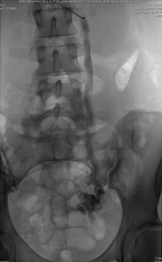
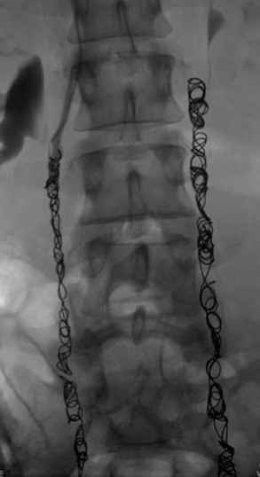
AThere is no known association with valvular deficiency.(3%)
BThere can be hormonal-mediated fluctuating vasodilation.(72%)
CTreatment is limited to laparoscopic surgical options.(2%)
DPathophysiology is significantly different from varicocele in men.(18%)
EIt is almost always asymptomatic.(5%)
Your answerB
Correct answerB. There can be hormonal-mediated fluctuating vasodilation.
Vital Concept
Estrogen induces venous dilation via nitric oxide release while progesterone weakens venous valves, collectively promoting ovarian vein incompetence and reflux in pelvic venous insufficiency, particularly in multiparous, premenopausal women.
Explanation
There can be hormonal-mediated fluctuating vasodilation.
The imaging findings are most compatible with pelvic venous insufficiency and subsequent coiling of the bilateral ovarian veins. The pre-treatment image shows a dilated left gonadal vein (blue arrow) with tortous pelvic veins (green arrow). The post-treatment image depicts endovascular embolization coils (yellow arrows) occluding the ovarian veins. Pelvic venous insufficiency is a cause chronic pelvic pain of venous origin; in the absence of occlusive etiologies, reflux can be exacerbated by hormone-mediated vasodilation.
Incorrect Answers:
A. Dilated and tortous pelvic vessels are a common finding, thought to exist in 10% of the population.
C. Treatment options include open surgical ovarian vein ligation, laparoscopic ovarian vein ligation, hysterectomy and bilateral salpingo-oophorectomy and transcatheter ovarian vein embolization with internal iliac vein sclerotherapy or coiling (shown in this case). It is important to embolize the entire vein to the level of its origin.
D. This entity is the female counterpart to varicoceles in men. Angiographically there is pelvic, vulvar, and upper thigh varicosities. The angiographic criteria include retrograde reflux, veins dilated to >1 cm in diameter, and cross-pelvic collateral filling.
E. Pelvic venous insufficiency may be asymptomatic and hence may go undiagnosed. Most often, however, symptoms include chronic unexplained pelvic pain, which may last for years, and is worse in an upright position. It is seen in more often in multiparous premenopausal women. It can be exacerbated by menses and estrogen therapy as there is thought to be hormone-mediated vasodilation.
Vital Concept: Estrogen induces venous dilation via nitric oxide release while progesterone weakens venous valves, collectively promoting ovarian vein incompetence and reflux in pelvic venous insufficiency, particularly in multiparous, premenopausal women.
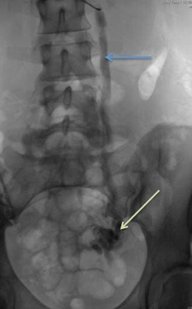
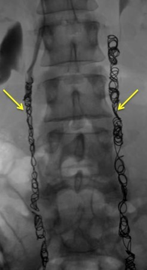
Q2
QID 49727
Correct
If all other factors are equal, which one of the body parts/tissues gives the best spatial resolution in PET imaging?
ALung(25%)
BLiver(10%)
CBone(62%)
DMesentery(3%)
Your answerC
Correct answerC. Bone
Vital Concept
Bone provides the best spatial resolution in PET imaging due to its high density which limits positron range, while lung tissue provides the worst resolution due to its low density allowing greater positron travel before annihilation.
Explanation
Bone
Spatial resolution in PET is based on time of flight and how far a positron travels in the density of the material before electron-positron annihilation. Once a positron is given off by a nucleus, it must travel in space to find an electron prior to the annihilation reaction. Spatial resolution will decrease if this positron travels far because it will not reflect its true origin/location. In materials of higher density, such as bone, positrons are more likely to find and interact with an electron at a closer distance to their origin than in material of lower density, like lung tissue. Thus, the lungs would have the worst spatial resolution.
Vital Concept: Bone provides the best spatial resolution in PET imaging due to its high density which limits positron range, while lung tissue provides the worst resolution due to its low density allowing greater positron travel before annihilation.
Q3
easy QID 21192
Correct
A 27-year-old female patient with a previously undiagnosed hypercoagulable state now presents with abdominal pain and distention. Which of the following is the diagnosis?
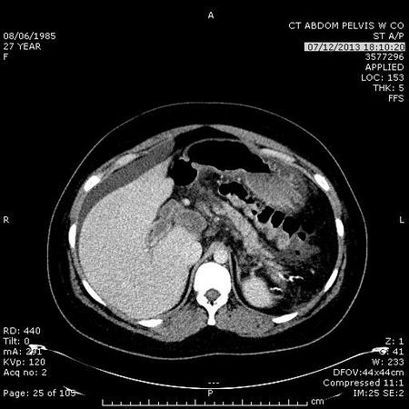
APortal vein thrombosis(92%)
BBudd-Chiari syndrome(7%)
CCirrhosis(0%)
DPrimary sclerosing cholangitis (PSC)(0%)
Your answerA
Correct answerA. Portal vein thrombosis
Explanation
Portal vein thrombosis
A large thrombus is seen in the portahepatis within a distended portal vein. A small amount of perihepatic ascites is seen.
Incorrect Answers:
B. Thrombosed hepatic veins may simulate dilated ducts in Budd-Chiari syndrome. The liver is distorted with peripheral > central volume loss, scarring, hepatocellular necrosis, and steatosis in Budd-Chiari syndrome.
C. Both Budd-Chiari and cirrhosis result in a deformed ("dysmorphic") liver with hypertrophy of the caudate lobe and ascites. Cirrhosis is not associated with thrombosed hepatic veins and often demonstrates portosystemic collateral veins, rather than purely systemic collaterals.
D. Both PSC and Budd-Chiari can result in caudate hypertrophy and a dysmorphic liver. PSC demonstrates dilated, irregular bile ducts, not thrombosed veins.
Q4
easy QID 2709
Correct
Which of the following enhancement patterns on breast MR are most suggestive of malignancy?
ASlow uptake with plateau(0%)
BContinuous increase in signal intensity(1%)
CDelayed enhancement(0%)
DRapid uptake with washout(98%)
Your answerD
Correct answerD. Rapid uptake with washout
Explanation
Rapid uptake with washout
There are three possible patterns of enhancement that have been described for breast lesions after administration of gadolinium. The Type III pattern is that of rapid uptake with washout, which is considered strongly suggestive of malignancy.
Incorrect Answers:
A. The Type II pattern is a plateau pattern with initial uptake followed by the plateau phase. This pattern is considered concerning for malignancy.
B. Type I is a progressive enhancement pattern, which typically shows a continuous increase in signal intensity. This pattern of enhancement is associated with benignity.
Q5
moderate QID 37422
Correct
A 36-year-old male patient presents with bilateral breast masses and a mammography is performed (images windowed to best show the finding(s)). Which of the following correctly states the BiRADS assessment?
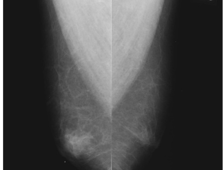
ABIRADS 4(4%)
BBIRADS 1(3%)
CBIRADS 2(92%)
DBIRADS 3(1%)
EBIRADS 5(0%)
Your answerC
Correct answerC. BIRADS 2
Vital Concept
Bilateral gynecomastia on mammography typically receives BI-RADS 2 classification, but BI-RADS 3 lesions in men have higher malignancy risk than in women and require close monitoring.
Explanation
BIRADS 2
The bilateral mediolateral oblique (MLO) projection mammograms demonstrate bilateral retroareolar flame-shaped breast masses (green arrows) compatible with gynecomastia, which is a benign finding, and as such, a BIRADS 2 designation.
Gynecomastia can be mild, moderate, or severe in degree. Gynecomastia is typically bilateral and is usually associated with pain. Men usually present with a palpable abnormality, focal tenderness, or a burning sensation. In cases in which the male patient is unable to identify or eliminate the offending agent, surgery may be performed to remove the tissue and relieve symptoms. On imaging, subareolar glandular tissue can be seen and at times can be markedly asymmetric. Typically, if this presents as a palpable abnormality, it will also be evaluated with sonography.
Incorrect Answers:
A. BIRADS 4 lesions may not have definitive appearance of breast malignancy but have a definite probability of being malignant.
B. BIRADS 1 is used for a normal exam. Gynecomastia is not a normal finding.
D. BIRADS 3 indicates a probable benign finding for which short-interval follow-up is recommended. This should have a less than 2% chance of malignancy.
E. BIRADS 5 indicates a highly suggestive, almost certain, finding of malignancy (greater than 95%) for which appropriate action should be taken.
Vital Concept: Bilateral gynecomastia on mammography typically receives BI-RADS 2 classification, but BI-RADS 3 lesions in men have higher malignancy risk than in women and require close monitoring.
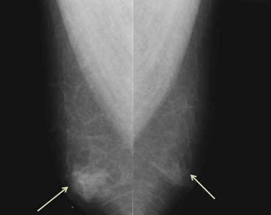
Q6
moderate QID 18074
Incorrect
A 57-year-old female with history of breast cancer complains of shortness of breath and tachycardia. Which of the following is the most likely diagnosis based on the second image?
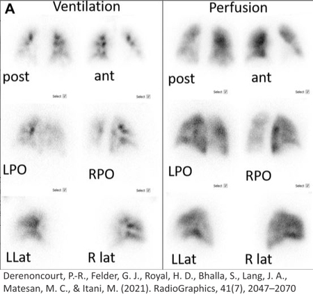
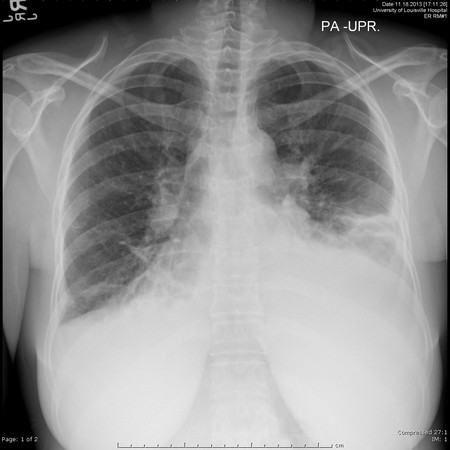
AAcute pulmonary emboli(8%)
BEmpyema(1%)
CPleural effusion(79%)
DPneumonia(11%)
Your answerD
Correct answerC. Pleural effusion
Explanation
Pleural effusion
There is a large pleural-based opacity with fluid tracking along the upper lateral margin of the pleura. VQ scan shows subtle oblique linear perfusion defect on anterior AP view on the left, most compatible with fissure sign given the findings on associated chest x-ray. There is no VQ mismatch to suggest pulmonary embolism identified.
Incorrect Answers:
In a patient with known malignancy, there is a high likelihood of pleural metastasis and effusion. Acute pulmonary embolism may rarely present as hemothorax (much less likely). A patient with empyema and will typically present with fevers and other signs of infection. This finding is in the pleural space making pneumonia less likely.
Q7
easy QID 37424
Correct
Which of the following statements is true regarding computer-aided detection (CAD) in mammography?
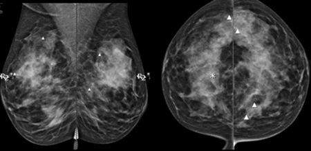
AIf CAD detects a potential abnormality not seen by the radiologist, it can typically be ignored(1%)
BIf the radiologist detects a finding not seen by CAD, it can typically be ignored(0%)
CCAD is typically used as an adjuvant to radiologist assessment(97%)
DIn combination, CAD and a radiologist do not miss breast cancer(1%)
ECAD has little use diagnostically for a skilled mammographer(2%)
Your answerC
Correct answerC. CAD is typically used as an adjuvant to radiologist assessment
Vital Concept
CAD in mammography was designed as "second opinion" but shows mixed clinical results - effective use requires balancing workflow efficiency with diagnostic accuracy, as improper implementation can increase missed cancers or false-positives.
Explanation
CAD is typically used as an adjuvant to radiologist assessment
The use of computer-aided detection (CAD) devices is recommended only after the initial review of the mammogram.
Incorrect Answers:
A. If the radiologist sees a suspicious finding, they should work up that finding no matter what CAD says, because CAD misses some cancers that the radiologist sees.
B. Computer-provided marks should function as a “second look,” because CAD misses some breast cancers that are only detected by the radiologist.
D. Unfortunately, some breast cancers will always be missed.
E. In a prospective study of CAD on more than 9000 mammograms in an academic center, CAD and the radiologist found 13 of 19 cancers. CAD found 2 cancers undetected by the radiologist. In the same study, the radiologist found 4 cancers not marked by CAD. This argues for the supporting role of CAD.
Vital Concept: CAD in mammography was designed as "second opinion" but shows mixed clinical results - effective use requires balancing workflow efficiency with diagnostic accuracy, as improper implementation can increase missed cancers or false-positives.
Q8
easy QID 18071
Correct
The middle meningeal artery passes through which of the labelled structures on the images shown?
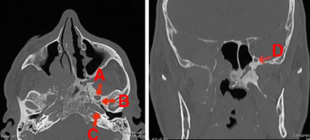
AA(6%)
BB(88%)
CC(2%)
DD(4%)
Your answerB
Correct answerB. B
Explanation
B
Explanation:
This is foramen spinosum. The middle meningeal artery passes through this foramen.
Incorrect Answers:
A. That is the foramen ovale; the mandibular nerve (third division of the trigeminal nerve V3) passes through it.
C. That is the carotid canal, where the internal carotid artery crosses the petrous bone.
D. That is the foramen rotundum; the maxillary nerve (second division of the trigeminal nerve V2) passes through it.
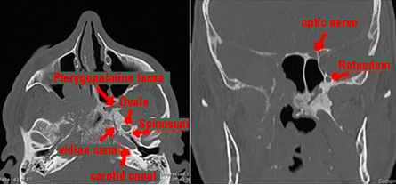
Q9
hard QID 49600
Correct
A 2-year-old patient presents with a short stature. Which of the following is true?
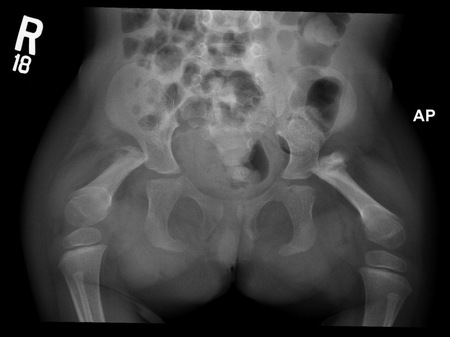
AAbsence of the proximal femoral ossification centers at this age is common in this disease(67%)
BThis is a diagnosis of bilateral congenital short femurs(27%)
CHip instability is rare(0%)
DIpsilateral abnormalities are uncommon(5%)
Your answerA
Correct answerA. Absence of the proximal femoral ossification centers at this age is common in this disease
Vital Concept
Proximal focal femoral deficiency on radiograph shows a shortened femur with absence or hypoplasia of the proximal femoral segment, often lacking a normal femoral head and neck, and associated acetabular dysplasia.
Explanation
Absence of the proximal femoral ossification centers at this age is common in this disease
Radiograph demonstrates bilaterally short femurs with the absence of the proximal femoral epiphyses on both sides and bilateral superolateral hip dislocations, consistent with bilateral proximal focal femoral deficiency. The femoral capital ossification center is often absent up to 2 to 3 years of age.
Incorrect Answers:
B. Congenital short femurs would have a normal femoral head.
C. and D. Hip instability and ipsilateral limb abnormalities are common.
Vital Concept: Proximal focal femoral deficiency on radiograph shows a shortened femur with absence or hypoplasia of the proximal femoral segment, often lacking a normal femoral head and neck, and associated acetabular dysplasia.
Q10
hard QID 37592
Correct
Which of the following is true regarding medical errors?
AThe patient/family should be informed of the error only when convenient for the physician(13%)
BBlame others for the error(0%)
CRefuse to apologize for the error(0%)
DEfforts should be made to prevent similar errors(82%)
EDisclosing the error only if it leads to an untoward event(5%)
Your answerD
Correct answerD. Efforts should be made to prevent similar errors
Vital Concept
As stated in the 2025 ABR NIS Guide, physicians should be committed to reporting and analyzing medical mistakes to develop appropriate prevention and improvement strategies.
Explanation
Efforts should be made to prevent similar errors
Medical errors are multifactorial events typically resulting from unsafe systems and processes rather than individual failures alone. The most effective strategy for error prevention involves designing safety into healthcare systems and processes rather than relying on blame-based approaches or "rooting out bad apples." Modern error prevention emphasizes shifting focus from detecting and correcting errors after they occur to improving underlying systems that prevent errors from happening or causing harm. This requires making errors visible rather than quietly fixing them, enabling organizations to learn from mistakes and address root causes through systematic process improvements, standardization, and embedding safety mechanisms into routine workflow.
Incorrect Answers:
A. The patient should be informed promptly, independent of what is convenient for the physician.
B. The physician should communicate with patients and family without trying to blame other individuals on the medical team.
C. The physician should apologize for the error.
E. The physician should disclose the error in any case regardless of untoward event.
Vital Concept: As stated in the 2025 ABR NIS Guide, physicians should be committed to reporting and analyzing medical mistakes to develop appropriate prevention and improvement strategies.
Q11
hard QID 43890
Incorrect
Which of the following is the most likely diagnosis in this infant with skeletal dysplasia?
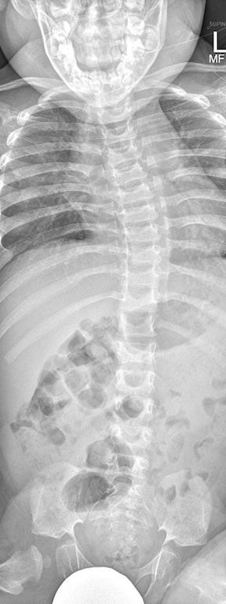
ASpondyloepiphyseal dysplasia(8%)
BMultiple epiphyseal dysplasia(3%)
COsteogenesis imperfecta(3%)
DAchondroplasia(75%)
EMucopolysaccharidosis(11%)
Your answerE
Correct answerD. Achondroplasia
Explanation
Achondroplasia
The frontal radiograph shows progressive narrowing of the interpedicular distances (blue arrows) as well as squared iliac wings (yellow arrows) and horizontal acetabular roofs (red arrows). These are some of the many skeletal imaging features of achondroplasia.
Achondroplasia is the most common skeletal dysplasia. In the majority of cases, it occurs due to sporadic mutations, with a prevalence of approximately 1 in 25,000-50,000. There is a male preponderance. Those affected are of normal intelligence with normal motor function. The disease results from a mutation in the fibroblast growth factor gene 3 (FGFR3), which results in abnormal cartilage formation. Bones that form by enchondral ossification are affected, whereas those that form by membranous ossification are not. This explains why the skull develops normally.
Incorrect Answers:
A and B. Spondyloepiphyseal dysplasia and multiple epiphyseal dysplasia both appear as multifocal epiphyseal irregularities that are bilateral and symmetric. The hips, knees, ankles, and wrists are most severely affected. The epiphyseal appearance is initially delayed, followed by a small and fragmented appearance, and then ultimately a flattened appearance. Spinal involvement (platyspondyly) in an additional feature presents in spondyloepiphyseal dysplasia, but not in multiple epiphyseal dysplasia.
C. Osteogenesis imperfecta represents a genetic disorder of type 1 collagen resulting in bone fragility. It is classified into 4 types based on clinical, genetic, and radiographic criteria. Radiographic features include severe osteopenia, thin bony cortices, kyphoscoliosis, and multiple fractures.
E. Mucopolysaccharidosis refers to a heterogeneous group of inherited disorders of metabolism in which a specific lysosomal enzyme deficiency results in an inability to break down glycosaminoglycan (GAG), or mucopolysaccharide. These substances then accumulate in multiple locations, including bone marrow. Although the specific skeletal manifestations vary based on the exact type of mutation, a general feature seen in the spine is bullet-shaped vertebral bodies.
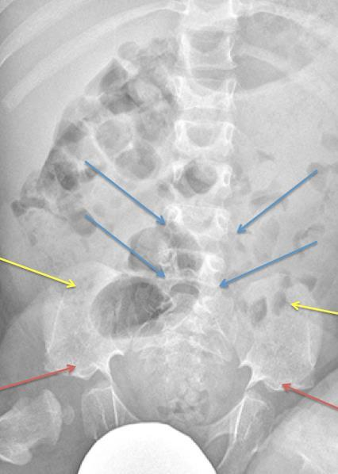
Q12
hard QID 49726
Correct
Which gamma camera part magnifies and inverts the image?
AConverging collimator(8%)
BPinhole collimator(76%)
CDiverging collimator(10%)
DPhotomultiplier tube(5%)
Your answerB
Correct answerB. Pinhole collimator
Vital Concept
Pinhole collimators produce inverted images with magnification determined by distance ratios - magnified when image-to-pinhole distance exceeds object-to-pinhole distance.
Explanation
Pinhole collimator
There are four types of gamma camera collimators: parallel hole, pinhole, converging, and diverging. Parallel hole collimators, most commonly used, have intervening septa perpendicular to the detector. Sensitivity and resolution of parallel hole collimators depend on septal length, hole diameter, and septal thickness. Pinhole collimators magnify and invert images, used for imaging thyroid and other small body parts. Magnification occurs if the pinhole-detector length is greater than the pinhole-patient length. Converging collimators magnify without inverting images. Diverging collimators take a large object and minimize it. Thus, a large part of the body is imaged on a small crystal.
Vital Concept: Pinhole collimators produce inverted images with magnification determined by distance ratios - magnified when image-to-pinhole distance exceeds object-to-pinhole distance.
Q13
easy QID 2706
Correct
Cranial caudal (CC) and mediolateral oblique (MLO) views from a screening mammogram show scattered round calcifications with lucent centers in the medial breast. Which of the following additional views would be most helpful in confirming a dermal location for these calcifications?
ATrue lateral view(5%)
BTangential view(91%)
CCleavage view(3%)
DRolled CC view(2%)
Your answerB
Correct answerB. Tangential view
Vital Concept
Dermal calcifications result from processes such as folliculitis or inspissated material within sweat glands. To specifically characterize dermal calcifications, a tangential mammographic view is advised.
Explanation
Tangential view
The described calcifications are most suspicious for dermal calcifications based on morphologic descriptors. A specialized mammographic view is obtained tangential to the skin surface in the area of the calcifications; this tangential view can specifically localize these calcifications to the dermis and confirm their benignity.
Incorrect Answers:
The following views would not help localize the described calcifications to the dermis.
A. If milk of calcium calcifications are suspected, a true lateral view is helpful for specific characterization.
C. A cleavage view depicts the posteromedial portion of bilateral breasts, typically used when obtaining multiple views of large breasts.
D. Rolled craniocaudal views are used to localize a lesion that is detected on CC view but not seen on MLO view.
Vital Concept: Dermal calcifications result from processes such as folliculitis or inspissated material within sweat glands. To specifically characterize dermal calcifications, a tangential mammographic view is advised.
Q14
easy QID 47075
Correct
A 52-year-old female patient undergoes an abdominal CT because of right upper quadrant pain. Which of the following is the diagnosis?
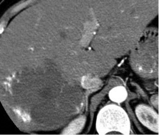
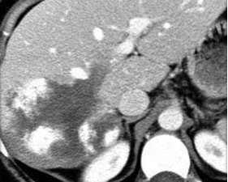
AHepatic adenoma(1%)
BFocal nodular hyperplasia(1%)
CHepatocellular carcinoma(1%)
DFibrolamellar hepatocellular carcinoma(1%)
EHemangioma(96%)
Your answerE
Correct answerE. Hemangioma
Vital Concept
Large hepatic hemangiomas typically show lobulated margins and become inhomogeneous due to degenerative changes and thrombosis but maintain the characteristic peripheral discontinuous globular enhancement with progressive centripetal filling that distinguishes them from malignant mimickers.
Explanation
Hemangioma
The images provided show a large, hypodense, and mildly heterogeneous liver mass with incomplete peripheral nodular enhancement (blue arrows) on the arterial phase of imaging. On the portal venous phase there is progressive centripetal fill-in of contrast (yellow arrows). These features are characteristic of a hemangioma. A hemangioma is a benign liver lesion of vascular (thought to be venous) etiology. Although the features seen here are those of a classical hemangioma, there are variants, such as atypical hemangioma, and flash-filling hemangiomas. Smaller lesions are often asymptomatic, with larger lesions causing hepatomegaly or abdominal pain.
Incorrect Answers:
A. Hepatic adenomas are a rare benign hepatic neoplasm most frequently seen in young patients in the setting of use of hormonally active drugs and medications, including oral contraceptives and anabolic steroids. Their CT appearance depends on the subtype. Encapsulation is seen in approximately 20% of cases, best appreciated in the delayed phase. Intratumoral hemorrhage and lipids are also common.
B. Focal nodular hyperplasia is often referred to as the stealth lesion. It appears isodense or hypodense to normal liver on non-contrast exams. There is transient, intense, homogeneous arterial phase enhancement, which on the portal venous phase is isodense to background liver. A unique feature is a central scar, most apparent on delayed phase imaging (due to fibrous tissue).
C. Hepatocellular carcinoma is characterized by a heterogeneous mass with arterial hyperenhancement with subsequent washout on delayed imaging. Intratumoral hemorrhage and lipids are frequently present. They are often seen in the setting of background liver cirrhosis.
D. Fibrolamellar hepatocellular carcinoma is a rare malignancy seen in young adults, as opposed to typical HCC, which is present in cirrhosis. They most often appear on CT as a heterogeneous mass with a well-defined contour and hypoenhancing central scar. The scar enhances less often, compared to FNH. Further nodal metastases are frequently present (greater than 50% of cases).
Vital Concept: Large hepatic hemangiomas typically show lobulated margins and become inhomogeneous due to degenerative changes and thrombosis but maintain the characteristic peripheral discontinuous globular enhancement with progressive centripetal filling that distinguishes them from malignant mimickers.
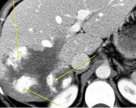
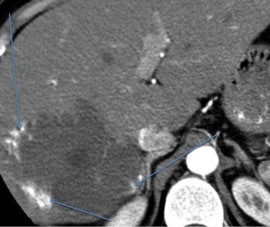
Q15
easy QID 2670
Correct
A tech brings the provider a mammogram from a 45-year-old female. The provider notices a mass in the subareolar area. The tech reports that the patient has itching, flaking, and thickened skin around the nipple and areola. Which of the following should the provider suspect?
ABenign findings(0%)
BFibrocystic disease(0%)
CPaget disease of the breast(98%)
DBreast abscess(1%)
Your answerC
Correct answerC. Paget disease of the breast
Explanation
Paget disease of the breast
Paget disease of the breast causes skin findings that may seem benign at first glance. As many as 50% of people who have Paget disease of the breast have a breast lump that can be felt in a clinical breast exam. This presentation results from adenocarcinoma cells infiltrating the nipple and adjacent skin. Underlying breast cancer is present in 90% of Paget disease cases, most commonly ductal carcinoma in situ (DCIS) or invasive breast cancer. About half of the time, patients with Paget disease have a negative mammographic work up; in these cases, MRI can be useful to evaluate for underlying mass.
Incorrect Answers:
A, B. Fibrocystic disease or benign findings are possible, but the skin findings suggest another process and the patient requires a skin biopsy.
D. A breast abscess causes intense pain and the patient would likely have skin redness, possibly fever, and would not tolerate the breast compression during a mammogram.
Q16
moderate QID 19216
Correct
A provider’s patient has recently undergone a repair of an abdominal aortic aneurysm. Which of the following best characterizes the type II endoleak seen in the image below?
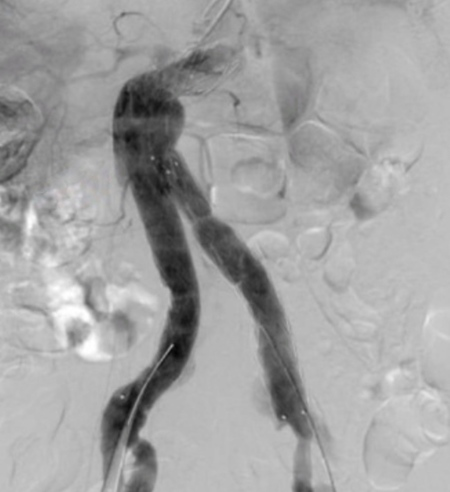
ABlood passing through pores in the graft fabric into the aneurysm sac.(2%)
BAn ineffective seal coming in from the margins of the graft.(6%)
CBlood coming in from collateral vessels.(90%)
DA leak at one of the joints in the graft.(3%)
Your answerC
Correct answerC. Blood coming in from collateral vessels.
Vital Concept
The types of endoleak are classified by the source of the leak. The type of endoleak determines the magnitude of intrasac pressure.
Explanation
Blood coming in from collateral vessels.
Following the endovascular repair of abdominal aortic aneurysm (AAA), endoleak (all types) has been reported in 20 to 50% of patients. The reported rates vary depending on the follow-up length and the imaging modality used for their detection. Manifestations of endoleak range from asymptomatic to uncontrolled aortic rupture. Endoleaks result from a poor seal at the proximal or distal fixation sites or between the graft components, from patent lumbar vessels, or from the result of graft material failure.
Endoleaks may be identified on completion of arteriography at the time of endovascular graft placement or during later follow-up at the time of endograft surveillance imaging. The type of endoleak, classified as type I through type V, determines its clinical significance and treatment. Some types of endoleak clearly affect short-term and long-term outcomes. There is little controversy that type I and III endoleaks should be treated, but there is debate about the clinical importance of type II endoleak. Reports conflict regarding the optimal timing and type of treatment. Most endoleaks are managed successfully with the placement of additional stents or by using embolization techniques, but sometimes open surgical repair is needed.
This patient has a type II endoleak with multiple small collateral vessels opacifying in the region of the excluded sac. This may be observed or treated with embolization of collateral vessels if the sac grows. Endoleaks are a persistent blood flow outside the lumen of the endoluminal graft, within an aneurysm sac or adjacent contained area such as a vessel segment.
Incorrect Answers:
A. This would be a type IV endoleak, where blood flows into the aneurysm sac due to increased porosity (blood passing through from the graft into the aneurysm sac).
B. This would be a type I (a proximal end or b distal end) endoleak where an ineffective seal at the margin of the graft allows blood to continue flowing into the aneurysmal sac.
D. This would be a type III endoleak, where blood flows into the aneurysm sac secondary to inadequate or ineffective sealing at graft joints or rupture of the graft fabric.
Vital Concept: The types of endoleak are classified by the source of the leak. The type of endoleak determines the magnitude of intrasac pressure.
Late type Ia or type Ib endoleak can develop as a result of conformational changes in the aneurysm sac, aneurysmal degeneration of the aortic neck or iliac arteries, severe angulation at the fixation sites, or graft migration. Patients requiring large proximal diameter devices (34 to 36 mm) to seal dilated aortic necks or flared iliac limbs (>20 mm) to seal wide iliac arteries are reported to have a higher risk of late type 1a or 1b endoleak, respectively.
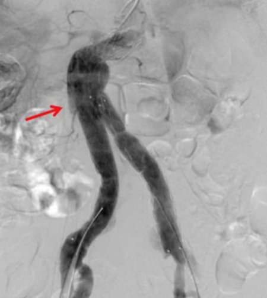
Q17
moderate QID 39267
Correct
A 27-year-old female patient who recently underwent an uneventful cesarean section presents to the ultrasound department on post-operative day 2 with falling hematocrit, pelvic pain, and fullness in their urinary bladder. Initial sonographic images are shown at the top. The patient was treated conservatively, and a repeat scan was performed 8 days later, which is shown on the bottom. Which of the following is the most likely diagnosis?
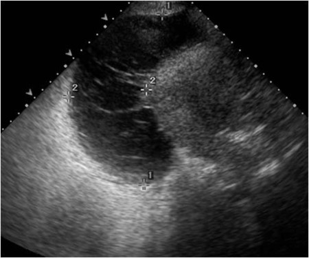
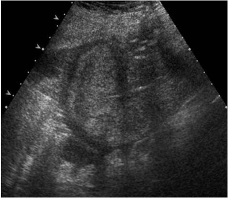
AUterine dehiscence(6%)
BUterine rupture(1%)
CEndometritis(1%)
DBladder flap hematoma(87%)
ENormal post-operative change(4%)
Your answerD
Correct answerD. Bladder flap hematoma
Explanation
Bladder flap hematoma
The initial sagittal ultrasound images at the level of the bladder show a large, heterogeneous mass with lace-like internal echoes (green arrow) between the lower uterine segment (blue arrow) and the bladder wall (yellow arrow). The follow-up imaging shows that it has greatly decreased in size. Given the appearance, history, and follow-up imaging, a bladder flap hematoma is likely. During cesarean deliveries performed with a low uterine transverse incision, the peritoneum is incised between the myometrium and bladder and reflected inferiorly. If bleeding occurs at this site, a hematoma known as a bladder-flap-hematoma forms between the urinary bladder and the lower uterine segment. Bladder flap hematomas can be considered normal if they are less than 4 cm in size, and they may occur in up to 50% of patients. A potential complication is superinfection of the hematoma, which will appear sonographically as internal debris and, potentially, gas, which appears as echogenic foci causing “dirty” posterior shadowing. They can typically be monitored and treated conservatively but may occasionally require surgical evacuation.
Incorrect Answers:
A. Uterine dehiscence is a very difficult imaging diagnosis because of overlap with the normal appearance of the uterine incision after cesarean delivery. In general, there is not a good correlation between imaging (US, CT, MR) and this diagnosis. One may see widening of the lower uterine incision and a fluid-filled cleft within.
B. Uterine rupture is the most severe potential complication of cesarean delivery and is defined as separation of all layers of the uterine wall, including the serosal layer, with abnormal communication between the uterine cavity and the peritoneal cavity. The presence of gas within the uterine defect extending from the endometrial cavity to the extrauterine parametrium in association with hemoperitoneum increases the likelihood of rupture in the appropriate clinical setting.
C. Endometritis is more of a clinical diagnosis than an imaging diagnosis. It has nonspecific sonographic findings that can include a thickened, heterogeneous endometrium with intracavitary fluid and/or air.
E. Normal post-operative change encompasses a spectrum of imaging findings. One should be able to identify the incision, which typically appears as an oval or linear focus that is centrally located within the uterus and is isoechoic to hypoechoic relative to the myometrium. Endometrial gases and simple or echogenic fluids may also be present.
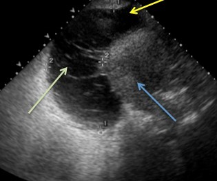
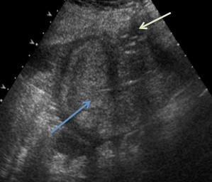
Q18
moderate QID 2903
Correct
Which of the following artifacts is displayed on the ultrasound image?
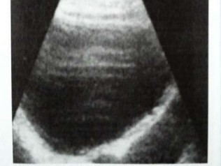
ASide lobe artifact(21%)
BMirror image artifact(3%)
CSpeed displacement artifact(4%)
DReverberation artifact(70%)
EGrating lobe artifact(2%)
Your answerD
Correct answerD. Reverberation artifact
Vital Concept
The repeated near-field lines represent reverberation artifact from beam bouncing between transducer face and anterior wall of the fluid structure, with each reflection cycle creating apparent echoes at progressively deeper locations due to cumulative transit time delays.
Explanation
Reverberation artifact
Reverberation artifact occurs when two parallel highly reflective surfaces repeatedly reflect the beam back and forth before returning to the transducer at different times. These delayed echoes will be shown as multiple linear reflections, which are equidistant from each other.
Incorrect Answers:
A. Side lobe artifact is created by detection of low-amplitude ultrasound waves, which project radially from the main beam axis. These detected waves will erroneously place objects outside of the field of view onto the image. This is commonly seen as abnormal signal in anechoic structures such as the urinary bladder or gallbladder.
B. Mirror image artifacts occur when the beam encounters a highly reflective interface. Echoes are reflected from the interface back towards the transducer but then encounter the "back" of a structure, are reflected back to the original reflector and then reflected back to the transducer. This results in a duplicated structure or "mirror image." This commonly occurs at the diaphragm.
C. Speed displacement artifact occurs when the velocity of sound is decreased below the assumed 1540 m/sec due to an attenuating lesion resulting in a delay of the returning echo. The image processor will erroneously place the tissue posterior to the attenuating lesion deeper than they are truly located.
E. Grating lobes are produced in multielement transducers and result from division of the transducer into smaller elements. These off-axis beams are more perpendicular to the main beam axis, compared to side lobes. Grating lobe artifacts are similar to side lobe artifacts but occur closer to the transducer.
Vital Concept: The repeated near-field lines represent reverberation artifact from beam bouncing between transducer face and anterior wall of the fluid structure, with each reflection cycle creating apparent echoes at progressively deeper locations due to cumulative transit time delays.
Q19
easy QID 2856
Correct
This 73-year-old male was found to have the imaging findings shown below. If his family were found to have similar findings and passed on a genetic condition to him that predisposed him to these lesions, which additional lesion would you expect to find?
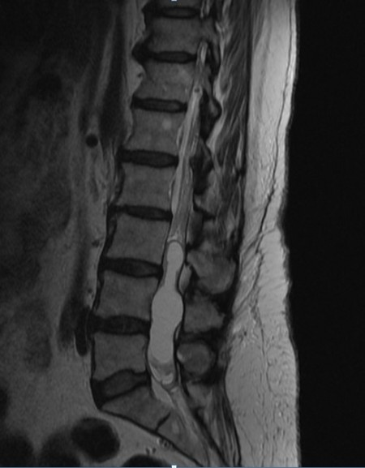
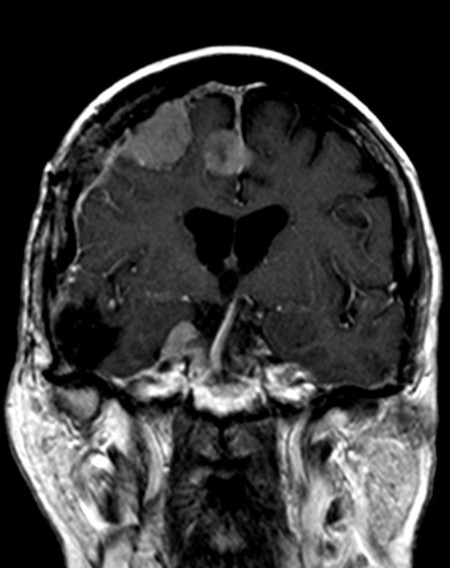
AAstrocytoma(3%)
BHemangioblastoma(8%)
CSchwannoma(87%)
DGanglioglioma(2%)
Your answerC
Correct answerC. Schwannoma
Vital Concept
Neurofibromatosis type 2 (NF2) is a rare autosomal dominant neurocutaneous disorder (phakomatosis) characterizes by development of multiple CNS tumors such as intracranial schwannomas (mostly vestibular schwannomas and rarely spinal schwannomas), intracranial and spinal meningiomas, and intraspinal-intramedullary ependymomas.
Explanation
Schwannoma
The images demonstrate three extra-axial enhancing lesions in the brain with dural tails and an intradural cystic lesion occupying the thecal sac.
The bottom image should make you think of meningiomas, especially given their enhancement pattern and dural-based tails findings. Taken together with a genetic condition causing a lesion in the spinal cord, you should think of neurofibromatosis type 2 (NF-2) and a spinal cord ependymoma.
Ependymomas are a group of glial tumors that typically arise within or adjacent to the ependymal lining of the ventricular system and are thought to be derived from the radial glial cells in the subventricular zone. Ependymomas most commonly occur in the posterior fossa, in contact with the fourth ventricle, or in the intramedullary spinal cord; they occasionally occur in the brain parenchyma outside the posterior fossa, and very rarely outside the central nervous system (CNS).
Ependymomas account for less than 10 percent of tumors arising in the CNS and 25 percent of primary tumors originating in the spinal cord.
The question stem then asks for the third inherited lesion you would expect to find in NF-2, an autosomal dominant disease involving a defect in chromosome 22, in which all patients develop central nervous system (CNS) tumors. The mnemonic for NF-2 tumors is MISME (Multiple Inherited Schwannomas, Meningiomas, and Ependymomas).
Incorrect Answers:
A.
Familial cases of isolated astrocytomas have been reported but are very rare. Astrocytomas can have a genetic link when they are associated with a few rare, inherited disorders. These include neurofibromatosis type I, Li-Fraumeni syndrome, Turcot syndrome, and tuberous sclerosis.
B.
Although the exact cause of hemangioblastoma is unknown, its presence in various clinical syndromes may suggest an underlying genetic abnormality. The genetic hallmark of hemangioblastomas is the loss of function of the VHL gene.
D.
Ganglioglioma is the most common epilepsy-associated neoplasm that accounts for approximately 2% of all primary brain tumors. While a subset of gangliogliomas are known to harbor the activating p.V600E mutation in the BRAF oncogene, the genetic alterations responsible for the remainder are largely unknown, as is the spectrum of any additional cooperating gene mutations or copy number alterations.
Vital Concept: Neurofibromatosis type 2 (NF2) is a rare autosomal dominant neurocutaneous disorder (phakomatosis) characterizes by development of multiple CNS tumors such as intracranial schwannomas (mostly vestibular schwannomas and rarely spinal schwannomas), intracranial and spinal meningiomas, and intraspinal-intramedullary ependymomas.
Q20
easy QID 63875
Correct
Which type of pregnancy is demonstrated on the ultrasound shown below? paragraph
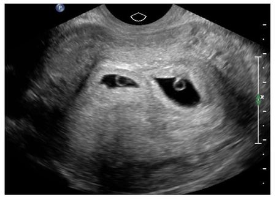
AMonochorionic, monoamniotic(0%)
BDichorionic, monoamniotic(2%)
CDichorionic, diamniotic(98%)
DConjoined twins(0%)
Your answerC
Correct answerC. Dichorionic, diamniotic
Explanation
Dichorionic, diamniotic
There are two clearly separate gestational sacs in the endometrium, compatible with a dichorionic-diamniotic pregnancy.
Incorrect Answers:
A. Monochorionic, monoamniotic pregnancies have only one amniotic cavity.
B. This does not exist.
D. Conjoined twins are monozygotic, monochorionic, monoamniotic.
Q21
easy QID 4978
Correct
Multiple foci of increased uptake in right-sided posterior ribs in this 8-week-old infant who was born at full-term should raise suspicion for what entity?
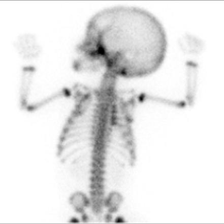
ANon-accidental trauma(98%)
BRickets(0%)
COsteogenesis imperfecta(1%)
DBirth trauma(1%)
Your answerA
Correct answerA. Non-accidental trauma
Vital Concept
Rib fractures are injuries strongly associated with child abuse. In the absence of a history of massive accidental trauma, underlying bone fragility or cardiopulmonary resuscitation, rib fractures are likely to be due to nonaccidental injury.
Explanation
Non-accidental trauma
Multiple successive posterior rib fractures on nuclear medicine bone scan are highly specific for non-accidental trauma. Posterior ribs require significant anteroposterior chest compression to fracture—a mechanism difficult to achieve accidentally in infants but characteristic of abusive squeezing or shaking. Posterior rib fractures have extremely high specificity for child abuse, with 60% of affected children under 5 years showing concurrent injuries. Bone scan is more sensitive than radiographs for detecting these initially occult fractures that become apparent during healing with periosteal reaction formation.
Incorrect Answers:
B. Technetium-99m-MDP whole-body bone scan shows multiple areas of moderately or intensely increased uptake at costochondral junctions of the ribs, known as the "ricketic rosary" distribution.
C. Osteogenesis imperfecta (OI) refers to a heterogeneous group of congenital, non-sex-linked, genetic disorders of collagen type I production, involving connective tissues and bones. The hallmark feature of osteogenesis imperfecta is osteoporosis and fragile bones that fracture easily, blue sclera, dental fragility and hearing loss.
D. Rib fractures are uncommon in infancy and, when diagnosed, often raise the suspicion of child abuse.
Vital Concept: Rib fractures are injuries strongly associated with child abuse. In the absence of a history of massive accidental trauma, underlying bone fragility or cardiopulmonary resuscitation, rib fractures are likely to be due to nonaccidental injury.
Q22
hard QID 2917
Incorrect
A T1 spin-echo image is obtained at 1.5 T using a 256 x 256 matrix. Which statement regarding signal to noise ratio (SNR) is true?
AIncreasing to a 512 x 512 matrix will improve SNR.(9%)
BDecreasing the field of view (FOV) will improve SNR.(9%)
CUse of parallel imaging (PI) will improve SNR.(5%)
DIncreasing the receiver bandwidth will improve SNR.(40%)
EIncreasing the number of excitations (NEX) will improve SNR.(35%)
Your answerB
Correct answerE. Increasing the number of excitations (NEX) will improve SNR.
Vital Concept
SNR in spin-echo is affected by the intrinsic signal of the tissue, the voxel size, NEX and bandwidth.
Explanation
Increasing the number of excitations (NEX) will improve SNR.
Increasing the number of excitations (NEX) will increase the SNR by a factor of the square root of NEX. This is a value worth remembering. For example, increasing the NEX from 1 to 4 will increase SNR to the square root of 4, or essentially doubling the SNR. The cost is an increase in imaging time by a factor of 4.
Incorrect Answers:
A. Major factors that affect SNR are the intrinsic signal of the tissue, the voxel size, NEX, and bandwidth.
equation
Increasing the matrix will result in a smaller voxel. This means less signal is grouped into each viewed pixel and therefore decreases the SNR.
B. Major factors that affect SNR are the intrinsic signal of the tissue, the voxel size, NEX, and bandwidth.
Decreasing the FOV will result in a smaller voxel. This means less signal is grouped into each viewed pixel and therefore decreases the SNR.
C. Major factors that affect SNR are the intrinsic signal of the tissue, the voxel size, NEX, and bandwidth.
The use of parallel imaging will result in decreased acquisition time, but at the expense of decreased SNR as part of k-space is interpolated rather than directly measured.
D. Major factors that affect SNR are the intrinsic signal of the tissue, the voxel size, NEX, and bandwidth.
As the formula shows, increasing the bandwidth will decrease the SNR while giving faster acquisition times. This is because noise is recorded at all frequencies so increasing the number of sampled frequencies will increase noise. This results in decreased SNR.
Vital Concept: SNR in spin-echo is affected by the intrinsic signal of the tissue, the voxel size, NEX and bandwidth.
Q23
easy QID 21155
Correct
A 38-year-old female patient presents for follow-up evaluation of hepatic lesion incidentally noted on recent abdominal CT. Which of the following is the diagnosis?
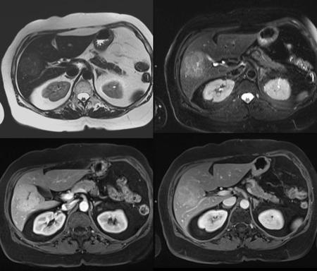
AHepatocellular carcinoma (HCC)(1%)
BFocal nodular hyperplasia (FNH)(96%)
CHepatic adenoma(3%)
DMetastasis(0%)
EIntrahepatic cholangiocarcinoma(0%)
Your answerB
Correct answerB. Focal nodular hyperplasia (FNH)
Explanation
Focal nodular hyperplasia (FNH)
Focal nodular hyperplasia (FNH) is essentially a liver hamartoma (disorganized but nonmalignant hepatocytes), typified by a T2 signal that is isointense to slightly hyperintense to background liver parenchyma. This is more conspicuous on the fat-saturated T2 imaging on the top right compared to the non-fat-saturated T2 image on the top left (blue arrows). Following contrast administration there will be an arterially hyperenhancing mass (red arrow) with a T2 hyperintense and non-enhancing scar (yellow arrows). On the delayed post-contrast scan, there is similar enhancement to background liver parenchyma (green arrow). It further may be differentiated from hepatic adenoma, which may mimic FNH, with the administration of hepatocellular-specific contrast. FNH typically enhances with hepatocellular-specific agents, while adenoma does not.
Incorrect Answers:
A. Hepatocellular carcinoma is characterized by heterogeneous signal intensity on T1WI and typical hyperintensity on T2WI, with arterial hyperenhancement with subsequent washout on post-contrast imaging. Any arterially hyperenhancing lesion in a cirrhotic liver should raise the suspicion for hepatocellular carcinoma.
C. Hepatic adenomas are a rare benign hepatic neoplasm most frequently seen in the setting of use of hormonally active drugs and medications, including oral contraceptives and anabolic steroids. Generally, on MRI they appear as heterogeneously hyperintense on T1WI due to fat (and potentially hemorrhage) with heterogeneous lesion enhancement on arterial phase imaging and surrounding enhancement of a fibrous pseudocapsule on delayed imaging. They do not significantly enhance with the administration of hepatocellular-specific agents. As suggested, they are at risk for hemorrhage, especially when large.
D. Metastases can have multiple MR imaging appearances with heterogeneous signal intensity on T1WI and T2WI, as well as heterogeneous enhancement on post-contrast imaging. In the setting of known extrahepatic malignancy, any new hepatic lesion should be viewed with suspicion for metastasis.
E. Intrahepatic cholangiocarcinoma is characteristically heterogeneous on T1WI with peripheral hyperintensity on T2WI representing cellular material, and central hypointensity on T2WI representing fibrosis. Frequently there is associated capsular retraction. Regions of fibrosis may demonstrate enhancement on delayed phase imaging.
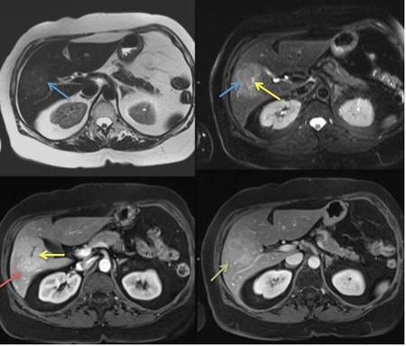
Q24
hard QID 3064
Correct
Shown below are trans-abdominal and transrectal ultrasound images of a 65-year-old male patient. Which of the following is the most likely diagnosis?
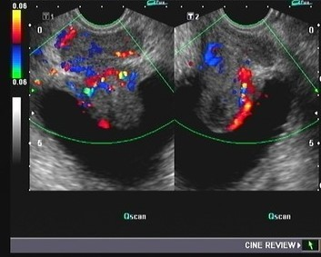
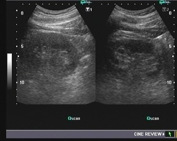
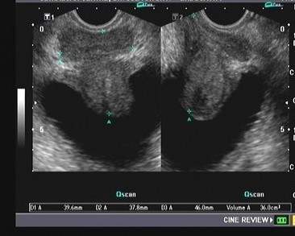
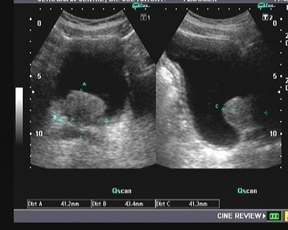
ABenign prostatic hyperplasia with prostatitis(74%)
BNormal study(0%)
CCarcinoma of prostate(25%)
DProstatic calculi(0%)
EUtricle cysts of prostate(1%)
Your answerA
Correct answerA. Benign prostatic hyperplasia with prostatitis
Vital Concept
Benign prostatic hyperplasia with intravesical protrusion indicates significant obstruction that may require intervention. Coexisting prostatitis presents with increased vascularity on color Doppler.
Explanation
Benign prostatic hyperplasia with prostatitis
This is a case of benign prostatic hyperplasia, with accompanying prostatitis (seen in the color Doppler image). Transrectal ultrasound shows marked intravesical enlargement of the median lobe with intravesical protrusion, which can produce a range of symptoms including increased frequency, incontinence, and urinary retention. The accompanying prostatitis (as shown here by increased color Doppler flow throughout the prostate) produces symptoms like dysuria and pelvic pain.
Incorrect Answers:
B. This is not a normal study, as explained above.
C. The enlargement of the prostate is benign in nature. Carcinoma is seen as hypoechoic lesions usually involving the peripheral zone.
D. This patient shows no prostatic calculi.
E. No cystic lesions of the prostate are seen.
Vital Concept: Benign prostatic hyperplasia with intravesical protrusion indicates significant obstruction that may require intervention. Coexisting prostatitis presents with increased vascularity on color Doppler.
Q25
easy QID 3004
Correct
A 42-year-old female presents with left lower extremity swelling for 2 days. Compression ultrasound and duplex Doppler ultrasound is performed. Images of the left popliteal vessels (non-compression image on the left, compression image on the right and additional duplex Doppler image) are shown. Which of the following is the primary finding for diagnosis of deep venous thrombosis (DVT)?
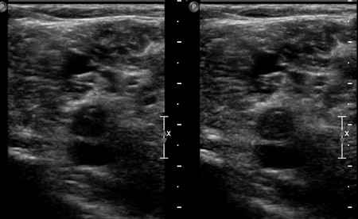
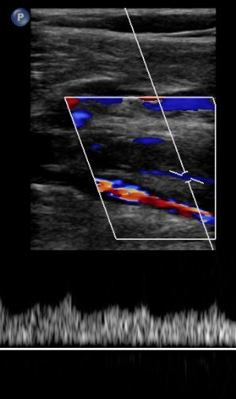
ALack of augmentation of venous flow with calf compression(3%)
BLack of wall coaptation with compression ultrasound(91%)
CLack of color flow on color Doppler imaging(4%)
DLack of spectral Doppler flow on spectral Doppler imaging(1%)
ELack of flow on Power Doppler imaging(1%)
Your answerB
Correct answerB. Lack of wall coaptation with compression ultrasound
Vital Concept
Deep vein thrombosis (DVT) most commonly occurs in the lower limbs. Radiologic features are: non-compressible venous segment, loss of phasic flow on Valsalva maneuver, absent color flow if completely occlusive, lack of flow augmentation with calf squeeze, increased flow in superficial veins.
Explanation
Lack of wall coaptation with compression ultrasound
The primary ultrasound finding for DVT is noncompressibility of the vein under direct probe pressure. Normally, a vein completely collapses when compressed with the ultrasound transducer, bringing the anterior and posterior vein walls together. In DVT, the presence of intraluminal thrombus prevents this normal collapse.
Incorrect Answers:
A. Color and Power Doppler techniques, as well as calf augmentation, increases confidence or ease of diagnosis but does not alter sensitivity for DVT as much as lack of vessel coaptation.
C. D. E. Color Doppler flow is within the popliteal artery is seen anteriorly. Duplex Doppler image demonstrates a small amount of flow around the thrombus.
Vital Concept: Deep vein thrombosis (DVT) most commonly occurs in the lower limbs. Radiologic features are: non-compressible venous segment, loss of phasic flow on Valsalva maneuver, absent color flow if completely occlusive, lack of flow augmentation with calf squeeze, increased flow in superficial veins.
Q26
hard QID 21567
Correct
A 24-year-old male patient presents with a history of trauma. Given the patient's history, which of the following is most consistent with the constellation of findings on the image below?
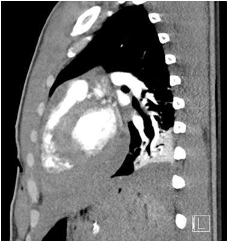
ALung contusion(9%)
BRib fracture(8%)
CPericardial effusion(19%)
DCardiac laceration(63%)
EPericarditis(1%)
Your answerD
Correct answerD. Cardiac laceration
Explanation
Cardiac laceration
Close inspection of the given image reveals a skin defect with a small amount of subcutaneous gas in a linear arrangement in the anterior chest wall anterior to the heart (yellow arrow). In addition, a high-density pericardial collection is present (blue arrows), highly suspicious for hemopericardium. There are additional findings of pleural effusion and adjacent atelectatic lung.
This patient was in fact stabbed in the chest, and the constellation of findings including linear subcutaneous gas (correlating with a stab wound) and hemopericardium is specifically concerning for penetrating myocardial injury. This patient was found to have a myocardial laceration intraoperatively. Associated findings of pleural effusion and atelectasis are nonspecific and may also be a direct result of the acute trauma if the pleural space was injured, or the result of cardiac dysfunction secondary to the traumatic cardiac injury.
Incorrect Answers:
A. The enhancing consolidation at the lung base is more likely to represent atelectasis than a contusion. This option does not explain the subcutaneous gas/skin defects.
B. No rib fractures are specifically seen.
C. While it is true that there is a pericardial collection, the density nearly matches the adjacent myocardium and is unlikely to be purely simple fluid. As such, another diagnosis should be offered. This option also does not specifically explain the subcutaneous gas/skin defect present.
E. High-density pericardial collections may be seen in the setting of pericarditis. However, given the history of trauma and the visible cutaneous laceration, hemopericardium should be more specifically considered.
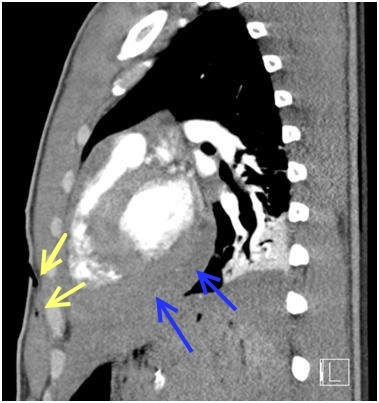
Q27
easy QID 5047
Correct
Which of the following constitutes a major spill?
A25 mCi of 99mTc(2%)
B25 mCi of 201Tl(4%)
C5 mCi of 131I(93%)
D5 mCi of 111In(1%)
E5 mCi of 67Ga(1%)
Your answerC
Correct answerC. 5 mCi of 131I
Vital Concept
Cut-off values differentiating major and minor spills for different radionuclides is highly testable for CORE. A more comprehensive list of cut-off values is present in the ABR RISC Study Guide.
Explanation
5 mCi of 131I
Greater than 1 mCi of 131I constitutes a major spill.
Incorrect Answers:
A. This would constitute a minor spill. Greater than 100 mCi of 99mTc would constitute a major spill.
B. This would constitute a minor spill. Greater than 100 mCi of 201Tl would constitute a major spill.
D. This would constitute a minor spill. Greater than 10 mCi of 111In would constitute a major spill.
E. This would constitute a minor spill. Greater than 10 mCi of 67Ga would constitute a major spill.
Vital Concept: Cut-off values differentiating major and minor spills for different radionuclides is highly testable for CORE. A more comprehensive list of cut-off values is present in the ABR RISC Study Guide.
Q28
hard QID 47103
Correct
A 56-year-old male patient who is status post-bone marrow transplant presents for abdominal ultrasound because of abnormal liver function tests. Which of the following accounts for the difference between these two images obtained a few minutes apart?
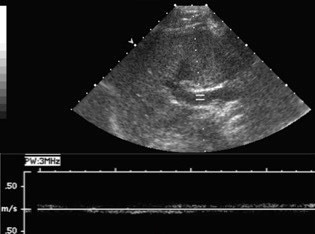
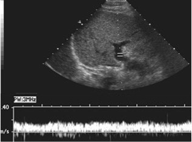
AHepatic vein thrombosis(5%)
BPortal vein thrombosis(26%)
CHepatic artery stenosis(1%)
DPortal hypertension(3%)
EArtifact(65%)
Your answerE
Correct answerE. Artifact
Vital Concept
At a 90° Doppler angle, cosine equals zero, making velocity calculation impossible since the ultrasound beam is perpendicular to flow direction no frequency shift occurs because there's no velocity component toward or away from the transducer.
Explanation
Artifact
The initial Doppler image shows a measurement being taken in which the Doppler angle is at a 90° orientation to the main portal vein, with a spectral Doppler reading of no flow. Once the angle is decreased, there is a normal spectral Doppler waveform. Thus, the initial reading was due to artifact from a Doppler angle that was too high. The Doppler equation is as follows: f = 2 fo v cos (doppler angle) c where fo = transducer frequency (MHZ), v = velocity of RBCs, C = constant (velocity of sound in soft tissue). The Doppler equation demonstrates that the maximum frequency shift will be obtained by directing the Doppler interrogation beam at a Doppler angle of 0 °, since the cosine of 0° is 1. However, most blood vessels course parallel to the skin, and zero Doppler angle is seldom obtainable. In addition, no Doppler shift is obtained at 90° since the cosine of 90° is 0. Thus, the optimal Doppler angle lies between 45° and 60 °. As a rule, angles should be kept to 60° or less, as those greater may give rise to error because of the comparatively large changes in the cosine of the angle that occur with small changes of angle.
Incorrect Answers:
A. Although hepatic veno occlusive disease is a known complication of bone marrow transplantation, this is not the case here. Further, the spectral Doppler tracing is of the portal, not the hepatic vein.
B. and D. Portal vein thrombosis and portal hypertension are seen most often as a complication of cirrhosis.
C. Hepatic artery stenosis may be seen in conditions such as liver transplant.
Vital Concept: At a 90° Doppler angle, cosine equals zero, making velocity calculation impossible since the ultrasound beam is perpendicular to flow direction no frequency shift occurs because there's no velocity component toward or away from the transducer.
Q29
easy QID 43785
Correct
Which of the following injuries has this 17-year-old female patient with knee pain recently sustained?
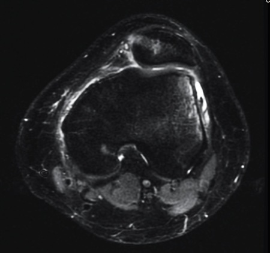
APivot shift injury(1%)
BMedial patellar translocation(7%)
CLateral patellar translocation(92%)
DHyperextension(0%)
EDirect anterior blow(0%)
Your answerC
Correct answerC. Lateral patellar translocation
Explanation
Lateral patellar translocation
The axial fat-saturated T2 image shows a reciprocal marrow edema lateral femoral condyle (red arrow) and the medial patellar facet (orange arrow). A useful way to distinguish medial and lateral on axial images through the patella is to note that the lateral patellar facet is longer. Note also that there has been an injury to the medial patellofemoral ligament and retinaculum (green arrow). These findings are all consistent with a recent lateral patellar translocation. Patella dislocation most commonly results from a twisting motion, with the knee in flexion and the femur rotating internally on a fixed foot (valgus-flexion-external rotation) and is most commonly seen in young athletic female patients.
Incorrect Answers:
A. A pivot shift injury occurs when a valgus force is applied to the knee in combination with external rotation of the tibia or internal rotation of the femur. This loads the ACL and is a frequent mechanism in ACL tears. MR findings of a pivot shift are reciprocal marrow edema at the posterior aspect of the lateral tibial plateau and anterior aspect of the lateral femoral condyle. One may see additional osteochondral injuries at the posterior tibial plateau and injuries to the root of the posterior horn of the lateral meniscus.
B. Medial dislocation of the patella is an unusual entity. It is usually an iatrogenic complication of surgical lateral retinacula release. It would show the opposite pattern of edema as seen here.
D, E. Hyperextension injury would show a reciprocal edema pattern at the anterior aspect of the femur and tibia. These may be seen in association with a direct anterior blow, which would show a solitary focus of marrow edema at the site of impact.
Q30
hard QID 49055
Incorrect
Which of the following is used in positron emission tomography (PET) quality control for uniformity?
AGermanium-68(49%)
BCobalt-58(48%)
CBarium-133(1%)
DGadolinium-153(2%)
Your answerB
Correct answerA. Germanium-68
Vital Concept
A uniformity scan on PET is performed every day and typically utilizes germanium-68 or sodium-22. Also, cobalt-57 would be an optimal flood source for a uniformity scan.
Explanation
Germanium-68
A uniformity scan on PET is performed every day and typically utilizes germanium-68 or sodium-22. Germanium-68 has a long half-life of approximately 280 days and decays to gallium-68 via electron capture. Gallium-68 has a shorter half-life of approximately 68 minutes and decays by positron emission. Other quality control parameters for PET are manufacturer-dependent, but daily uniformity is a consistent parameter.
A long-lived radionuclide comprising a reference source must match, in the frequency and energy of its x- and gamma-ray emissions, the clinical radionuclide for which it acts as a surrogate to ensure that instrument responses to the clinical radionuclide and to its surrogate are comparable. To see a table outlining the surrogate radionuclides commonly used in nuclear medicine and their physical properties and applications, click here.
Incorrect Answers:
B. Cobalt-57, not 58 (which can be a contaminant along with Cobalt-56), is used to assess gamma camera uniformity and is not commonly used in PET QC.
C. Barium is not typically used as a flood source.
D. Gadolinium is not typically used as a flood source due to Gadolinium's shorter half-life.
Vital Concept: A uniformity scan on PET is performed every day and typically utilizes germanium-68 or sodium-22. Also, cobalt-57 would be an optimal flood source for a uniformity scan.
Q31
easy QID 4999
Correct
In terms of how often quality control measures should be performed for gamma cameras, which of the following is correct?
ASpatial resolution: annually"'(2%)
BUniformity: daily'(92%)
CEnergy resolution for each radionuclide used: weekly"'(3%)
DSensitivity: monthly"'(2%)
Your answerB
Correct answerB. Uniformity: daily
Vital Concept
Daily intrinsic uniformity testing is mandatory before patient imaging to detect and eliminate non-uniformities that cause artifacts and false-positive or false-negative results. This quality control measure ensures consistent detector response across the field of view and identifies problems immediately before they compromise diagnostic accuracy.
Explanation
Uniformity: daily
Quality control for uniformity should be conducted every day.
Incorrect Answers:
A. Spatial resolution should be performed weekly, not annually.
C. Energy resolution for each radionuclide used should be performed daily, not weekly.
D. Sensitivity should be performed annually, not monthly.
Vital Concept: Daily intrinsic uniformity testing is mandatory before patient imaging to detect and eliminate non-uniformities that cause artifacts and false-positive or false-negative results. This quality control measure ensures consistent detector response across the field of view and identifies problems immediately before they compromise diagnostic accuracy.
Q32
QID 58873
Correct
Which of the following arrows indicates the cranial nerve responsible for balance?
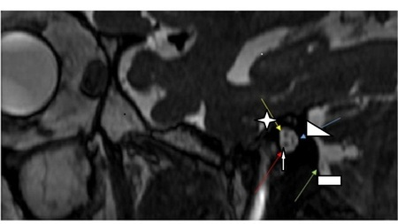
AYellow (star)(6%)
BRed (arrow)(27%)
CBlue (triangle)(66%)
DGreen (rectangular)(2%)
Your answerC
Correct answerC. Blue (triangle)
Explanation
Blue (triangle)
The sagittal T2 weighted MRI image at the level of the internal auditory canal profiles the vestibular nerve in short-axis, as indicated by the blue arrow. The superior and inferior divisions of the vestibular nerve run parallel and may be difficult to separate, as in this case. Information related to balance and acceleration are carried by these nerves to the utricle, saccule, and semicircular canals.
This nerve is also a common site for schwannomas, especially in the setting of neurofibromatosis type II. A useful method of remembering the cranial nerve anatomy in the internal auditory canal is the phrase “7-UP and Coke down,” signifying cranial nerves 7 and 8 (cochlear portion) respectively and their relative orientation.
Incorrect Answers:
A. The yellow arrow (star)points to the facial nerve, which is both a mixed sensory and motor cranial nerve.
B. The red arrow (arrow) points to the cochlear nerve, which is responsible for hearing.
D. The green arrow (rectangular) points to a small cerebellar venous branch, not a cranial nerve.
Q33
moderate QID 21571
Correct
A 24-year-old female patient undergoes catheter angiography for evaluation of chest pain. Which of the following is the diagnosis?
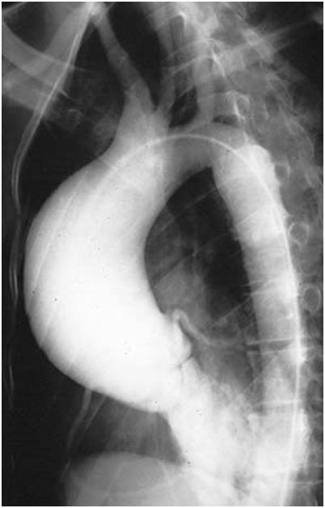
ACoarctation of the aorta(9%)
BPseudocoarctation of the aorta(6%)
CPatent ductus arteriosus(1%)
DMarfan syndrome(83%)
EAortic dissection(1%)
Your answerD
Correct answerD. Marfan syndrome
Explanation
Marfan syndrome
Marfan syndrome is a genetic abnormality of collagen formation resulting from a defect in the fibrillin gene. Patients have a typical marfanoid body habitus with features including tall stature, pectus excavatum/carinatum, ligamentous laxity, scoliosis, and arachnodactyly, among others. Marfan syndrome is commonly on the differential diagnosis for dural ectasia and atlanto-axial dislocation. Cardiovascular complications include aortic aneurysms, most frequently in the ascending aorta (red arrow) as well as vascular dissections and aortic regurgitation (blue arrow).
Incorrect Answers:
A. Coarctation of the aorta can be diagnosed in the setting of marked narrowing of the aorta (and potentially complete interruption of the aorta). It may either be located proximal (pre-ductal) or distal (post-ductal) to the ligamentum arteriosum. Pre-ductal is more common in infants, while post-ductal coarctation is more frequently seen in adults. Most frequently, in hemodynamically significant coarctation, one may see dilated collateral arteries (most commonly the intercostal arteries) as well as prominent rib-notching along the underside of the ribs, related to increased arterial diameter and pulsation. A plain film finding of coarctation is the figure of 3 sign, in which the narrowed portion of the aorta resembles a reversed numeral 3.
B. Pseudocoarctation of the aorta mimics true aortic coarctation but does not represent hemodynamically significant coarctation. It is due to age-related elongation of the aorta with resultant kinking and is typically seen in elderly patients. As it doesn’t represent true hemodynamically significant narrowing, no dilated collateral vessels or rib notching is seen.
C. On angiographic images, a patent ductus arteriosus should be seen as a reflux of arterial contrast from the aorta into the pulmonary artery as a result of systemic pressure gradient decompressing into the pulmonary tree. This may be seen until late in the disease process in which pulmonary artery hypertension develops that surpasses systemic pressure and there is subsequent reversal of flow across the ductus, known as Eisenmenger syndrome.
E. Aortic dissection should appear as a prominent cut-off of flow within the true lumen and potentially, decreased opacification of the false lumen of the dissection. Frequently, the dissection flap is visible in profile. This is not seen in this case.
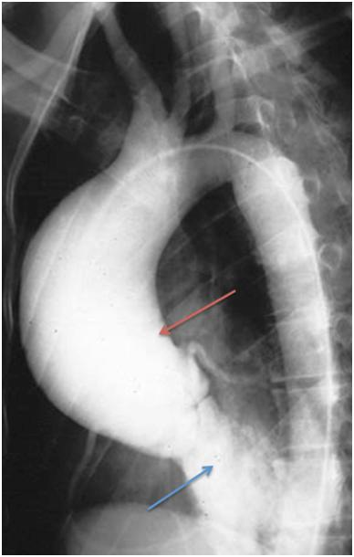
Q34
QID 2934
Correct
A provider is asked to protocol a fat-saturation MRI sequence of the pelvis in a patient with a total hip arthroplasty. Which of the following pulse sequences would provide the best fat saturation in this patient?
AFrequency selective fat saturation at 1.5 T(19%)
BFrequency selective fat saturation at 3 T(4%)
COut-of-phase sequence(1%)
DShort tau inversion recovery (STIR)(74%)
ET1 spin echo(2%)
Your answerD
Correct answerD. Short tau inversion recovery (STIR)
Vital Concept
Metal implants alter proton resonance frequencies but do not change intrinsic T1 relaxation times. Frequency-based fat suppression techniques fail near metal because they target specific frequencies that become shifted, while STIR remains effective because it relies on unchanged T1 relaxation differences between fat and water rather than frequency differences.
Explanation
Short tau inversion recovery (STIR)
The best choice is STIR because it does not rely on knowing these precessional frequencies and is more related to the relaxation time of fat protons. This results in less fat-suppression failure in the setting of metal.
Incorrect Answers:
A and B. Frequency selective fat saturation pulses rely on knowing the specific resonant frequencies of protons in fat. When there is inhomogeneity in the magnetic field, such as with metal, these frequencies are altered. As a result, the applied saturation pulse is miscalculated and does not suppress the fat signal. This is the reason frequency-selective saturation sequences fail in the setting of metal. The better choice is STIR because it does not rely on knowing these precessional frequencies and is more related to the relaxation time of fat protons. This results in less fat-suppression failure in the setting of metal.
C. Out-of-phase sequences are generally T1 GRE sequences, which are heavily influenced by susceptibility artifact. In addition, this would not result in suppression of the majority of the fat, only the voxels that contain both fat and water. The better choice is STIR because it does not rely on knowing these precessional frequencies and is more related to the relaxation time of fat protons. This results in less fat-suppression failure in the setting of metal.
E. Typical T1 spin-echo sequences are not fat-suppressed without the application of a fat saturation pulse. The better choice is STIR because it does not rely on knowing these precessional frequencies and is more related to the relaxation time of fat protons. This results in less fat-suppression failure in the setting of metal.
Vital Concept: Metal implants alter proton resonance frequencies but do not change intrinsic T1 relaxation times. Frequency-based fat suppression techniques fail near metal because they target specific frequencies that become shifted, while STIR remains effective because it relies on unchanged T1 relaxation differences between fat and water rather than frequency differences.
Q35
moderate QID 46761
Correct
Regarding the diagnosis of pancreatic solid pseudopapillary neoplasm (SPN), which of the following is true?
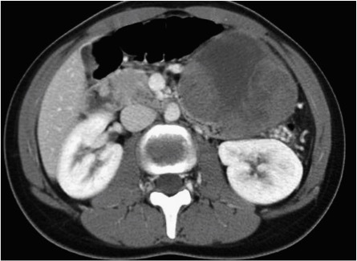
AThey are seen in elderly patients(2%)
BThey are less common in females(1%)
CA well-circumscribed mass with a thick enhancing capsule is a typical appearance(83%)
DTumors tend to be small (less than 3 cm) at the time of diagnosis(4%)
EMost tumors of this type are malignant(10%)
Your answerC
Correct answerC. A well-circumscribed mass with a thick enhancing capsule is a typical appearance
Vital Concept
SPN is a rare low-grade malignant neoplasm predominantly affecting young women with excellent prognosis.
Explanation
A well-circumscribed mass with a thick enhancing capsule is a typical appearance
The most common clinical presentation of SPN is pain, followed by a palpable mass. They can be located anywhere in the pancreas, with a slight predilection for the pancreatic tail. Although the tumors may have a variable appearance including solid (red arrow) and cystic (blue arrow) components, the most typical appearance is that of a well-circumscribed mass with a thick enhancing capsule (yellow arrow).
Incorrect Answers:
A. and B. SPN most commonly presents in young women. Approximately 91% of these tumors occur in young women with a mean age of 22 years.
D. These tumors are generally large at the time of presentation, with an average diameter of 6 cm.
E. About 10-15% of SPNs harbor malignancy; most are otherwise benign. Given this risk, they are surgically removed.
Vital Concept: SPN is a rare low-grade malignant neoplasm predominantly affecting young women with excellent prognosis.
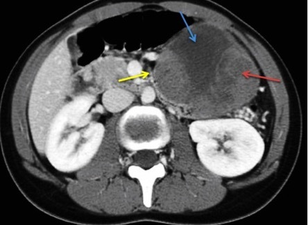
Q36
moderate QID 20584
Correct
A 42-year-old male patient presents with left shoulder pain that is worse at night. Which of the following is the most likely type of mineral deposit in this patient?
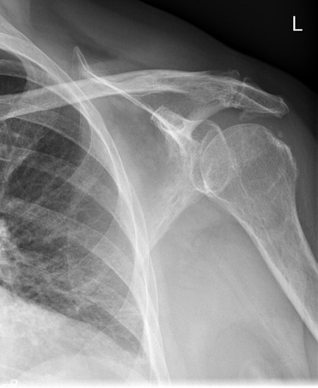
ACalcium pyrophosphate(11%)
BCalcium hydroxyapatite(87%)
CCalcium oxalate(1%)
DSodium urate(0%)
ECalcium carbonate(0%)
Your answerB
Correct answerB. Calcium hydroxyapatite
Explanation
Calcium hydroxyapatite
This frontal externally rotated shoulder radiograph shows two foci of calcification superior to the greater tuberosity (blue arrows), consistent with supraspinatus calcific tendonosis. This is a disease of calcium hydroxyapatite deposition. This presents most commonly with pain that worsens at night, often radiating to the deltoid insertion. It is more common in male patients. Most frequently, the calcium deposit is seen in the supraspinatus tendon but may less frequently lie within other tendons. Occasionally, the calcium deposit may rupture into the subacromial/subdeltoid bursa, at which time it may be seen layering in an amorphous pattern within this space.
Incorrect Answers:
A. Calcium pyrophosphate deposition is the abnormality seen in CPPD. It often (but not necessarily) results in chondrocalcinosis, in which calcium deposits are seen within the hyaline cartilage. CPPD is said to produce changes in joints characteristic of osteoarthritis in a non-osteoarthritis characteristic distribution.
C. Calcium oxalate deposition (oxalosis) results in diffuse bone and soft tissue calcium deposition with associated nephrocalcinosis. Findings may include generalized osseous sclerosis, humeral and femoral subchondral sclerosis, metaphyseal dense bands, chondrocalcinosis, ligament and tendon calcification, and small calcified kidneys.
D. Sodium urate deposition is the primary abnormality in gout, which characteristically produces juxta-articular erosions and preservation of the cartilage spaces (until late in the disease). Commonly, erosions have an “overhanging edge” morphology. Bone density is typically preserved.
E. Calcium carbonate is not a common crystal arthropathy. The most common locations in which to find calcium carbonate deposition are renal stones and biliary stones.
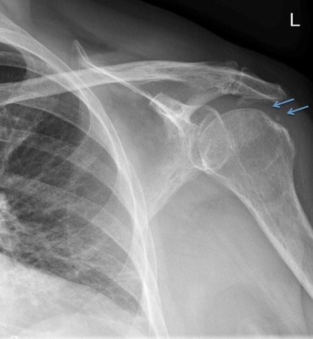
Q37
easy QID 20613
Correct
This child was born with a large “birthmark” on their face and a seizure disorder. Which of the following is the most likely diagnosis?
AHealed cortical infarct(0%)
BTORCH infection(0%)
CNeurocysticercosis(0%)
DTuberous sclerosis(1%)
ESturge-Weber(98%)
Your answerE
Correct answerE. Sturge-Weber
Explanation
Sturge-Weber
These are classic findings in Sturge-Weber syndrome. CT and MRI are most often used to identify intracranial abnormalities. The hemangioma present on the surface of the brain is, in the vast majority of cases, on the same side as the birthmark, and gradually results in calcification of the underlying brain and atrophy of the affected region.
Incorrect Answers:
A. Healed cortical infarct or other previous cerebral insults may present with intracranial calcifications.
B. TORCH infections include Toxoplasmosis, Other, Rubella, CMV, and HSV infections. TORCH infections can have a variety of presentations, one of which is ventricular enlargement with periventricular calcifications. Hemangiomas would not be associated with these infections.
C. Neurocystercosis may present with multiple ring-enhancing lesions.
D. Tuberous sclerosis can have a variety of presentations and would actually be included in the differential if one were to observe ventricular enlargement with periventricular calcifications (mentioned previously to describe a common finding in TORCH infections). Hemangiomas would not be a component of tuberous sclerosis.
Q38
hard QID 24473
Correct
Which of the following is the annual occupational dose equivalent limit for an extremity in a radiation worker?
A5 rem (0.05 Sv)(2%)
B15 rem (0.15 Sv)(5%)
C25 rem (0.25 Sv)(25%)
D50 rem (0.5 Sv)(66%)
Your answerD
Correct answerD. 50 rem (0.5 Sv)
Vital Concept
Adult radiation workers have an annual extremity dose limit of 50 rem (0.5 Sv) for areas distal to knees or elbows, which is ten times higher than the whole-body limit due to lower radiosensitivity and localized exposure risk.
Explanation
50 rem (0.5 Sv)
According to NRC regulations, adult radiation workers have an annual extremity dose limit of 50 rem (0.5 Sv) for skin or extremities distal to the knee or elbow, which is the same limit applied to individual organs. The extremity limit is higher than whole-body limits because extremities are less radiosensitive and the dose is localized rather than affecting critical organs, allowing for greater exposure while maintaining safety standards.
Incorrect Answers:
A) 5 rem (0.05 Sv) is incorrect as this represents the whole-body dose limit for adult radiation workers.
B) 15 rem (0.15 Sv) is incorrect as this is the annual eye lens dose limit for adults.
C) 25 rem (0.25 Sv) is incorrect and represents no established regulatory limit.
Vital Concept: Adult radiation workers have an annual extremity dose limit of 50 rem (0.5 Sv) for areas distal to knees or elbows, which is ten times higher than the whole-body limit due to lower radiosensitivity and localized exposure risk.
Q39
easy QID 18730
Correct
A 3-day-old full-term infant in the newborn nursery has not yet passed meconium. They have been breastfeeding well but have begun to have emesis after feeding. On physical examination, there is marked abdominal distention. An abdominal x-ray shows markedly dilated bowel loops. A contrast enema is then performed, which depicts proximal dilation of the colon to the level of the sigmoid with tapering and decreased caliber of the rectum extending distally. Which of the following is the diagnosis?
AMeconium ileus(2%)
BMeconium plug syndrome(7%)
CHirschsprung's disease(90%)
DAnal atresia(1%)
EIleal atresia(0%)
Your answerC
Correct answerC. Hirschsprung's disease
Vital Concept
Hirschsprung disease is caused by congenital aganglionosis of the rectum. Continued failure to pass meconium in a newborn warrants an abdominal X-ray, and a contrast enema should be performed if the diagnosis is suspected.
Explanation
Hirschsprung's disease
The lack of passage of meconium in a newborn should prompt an abdominal radiograph. The frontal abdominal radiograph shows diffuse gaseous dilatation of the bowel, consistent with a lower GI obstruction. Frontal and lateral images from the contrast enema show a distended sigmoid with focal tapering distally and decreased rectal caliber. The rectosigmoid ratio is less than 1 (normally greater than 1). This is diagnostic of Hirschsprung disease, or congenital aganglionosis of the rectum, which causes a functional low bowel obstruction.
Incorrect Answers:
A. Meconium ileus is an obstruction, usually at the level of the ileocecal valve, due to thick, viscous meconium in patients with cystic fibrosis. Typically, the entire colon will be small in caliber, and refluxed contrast into the small bowel will outline meconium.
B. Meconium plug syndrome is related to a lack of colonic activity in patients whose descending colonic segments are not yet fully mature. The descending colon is usually small in caliber, and often the functional obstruction is relieved by contrast enema.
D. Anal atresia is a lack of formation of the anal orifice, which would lead to a low bowel obstruction, but should be visible on physical exam. Performing a contrast enema on these patients would not be feasible.
E. Ileal atresia can have a similar appearance to that of meconium ileus and is on the differential for diffuse colonic caliber narrowing. A subtle finding can be the lack of contrast outlining meconium when refluxed into the small bowel.
Vital Concept: Hirschsprung disease is caused by congenital aganglionosis of the rectum. Continued failure to pass meconium in a newborn warrants an abdominal X-ray, and a contrast enema should be performed if the diagnosis is suspected.
Q40
hard QID 49573
Correct
Which of the following statements is true?
AThis is the most common type of calcaneal fracture.(5%)
BThis is more common among older adults.(53%)
CIncreased axial loading is the classic mechanism for this injury.(12%)
DDiagnosis is consistent with calcific tendonitis.(30%)
Your answerB
Correct answerB. This is more common among older adults.
Vital Concept
Achilles tendon avulsion fractures occur at posterior calcaneal tuberosity, commonly seen in older adults (insufficiency) and diabetic patients (neuropathic), caused by sudden plantarflexion with calf contraction.
Explanation
This is more common among older adults.
The lateral radiograph demonstrates an Achilles tendon avulsion. Avulsion fractures of the calcaneal tuberosity often occur in the background of osteoporosis or osteopenia, usually in an elderly population. They also tend to occur in diabetics, where they are described as insufficiency fractures.
Incorrect Answers:
A, C. Calcaneal fractures have characteristic appearances based on the mechanism of injury and are divided into two major groups, intraarticular and extraarticular. Most calcaneal fractures (70% to 75%) are intraarticular and result from axial loading that produces shear and compression fracture lines.
D. Calcific tendonitis has been reported in association with hypothyroidism, type I diabetes mellitus, and hyperparathyroidism.
Vital Concept: Achilles tendon avulsion fractures occur at posterior calcaneal tuberosity, commonly seen in older adults (insufficiency) and diabetic patients (neuropathic), caused by sudden plantarflexion with calf contraction.
Q41
easy QID 84587
Correct
A full-term infant is born by spontaneous vaginal delivery after an uneventful pregnancy. He is hypotonic and cyanotic. Despite stimulation and bag-mask-valve ventilation with oxygen, he remains cyanotic and has severe subcostal retractions. Breath sounds are greatly diminished bilaterally. Heart sounds are loudest over the left chest. Bowel sounds are heard in the mid/right chest. The abdomen is scaphoid. He is intubated and transferred to the neonatal intensive care unit, where he remains hypoxemic despite high ventilator settings. A chest x-ray is obtained (see image below). Which of the following is the diagnosis?
AHyaline membrane disease(0%)
BMeconium aspiration(1%)
CPneumothorax(1%)
DCongenital diaphragmatic hernia(98%)
EPneumonia(0%)
Your answerD
Correct answerD. Congenital diaphragmatic hernia
Vital Concept
Congenital diaphragmatic hernia (CDH) is caused by a developmental defect in the diaphragm through which abdominal contents enter the chest. This results in pulmonary hypoplasia on the same side, which is often severe. Due to the mass effect, the mediastinum is usually shifted toward the opposite side, and that lung may be underdeveloped as well. CDH occurs more commonly on the left side. Immediate intubation at delivery is mandatory to avoid intrathoracic bowel inflation. Severe respiratory distress and pulmonary hypertension may require nitric oxide or ECMO. Surgical correction of the defect may be edge-to-edge or involve the placement of a patch.
Explanation
Congenital diaphragmatic hernia
Congenital diaphragmatic hernia (CDH) is caused by a developmental defect in the diaphragm, through which abdominal contents enter the chest. This results in pulmonary hypoplasia on the same side, which is often severe. Due to the mass effect, the mediastinum is usually shifted toward the opposite side, and the contralateral lung may also be compressed and underdeveloped. CDH occurs more commonly on the left side. Right-sided CHD may sometimes be less severe, as the liver obstructs upward migration of the intestines. Pulmonary hypoplasia reduces all lung components, including air spaces, bronchial branches, and vessels. The result is usually severe respiratory distress at delivery or shortly thereafter, along with persistent pulmonary hypertension of the newborn (PPHN). Typical physical examination findings include respiratory distress, cyanosis refractory to oxygen administration, heart sounds shifted to the side opposite the defect, and a scaphoid abdomen due to the abdominal contents residing in the chest.
If CDH is diagnosed prenatally, then management at delivery includes mandatory intubation before the first breath to avoid inflation of intrathoracic intestines (which would cause further lung compression). Ensuring continuous nasogastric drainage contributes to this goal. Ventilator and medical management are aimed at treating cyanosis due to poor gas exchange and pulmonary hypertension. PPHN causes right-to-left shunting across the foramen ovale and ductus arteriosus if pulmonary pressures exceed systemic blood pressure. Pulmonary vasoconstriction can be reduced via inhaled nitric oxide and avoidance of respiratory and metabolic acidosis. Extracorporeal membrane oxygenation (ECMO) is often needed for infants refractory to ventilator management and with a poor survival prognosis. ECMO allows time for PPHN to resolve sufficiently to allow for effective ventilator care.
Definitive treatment is a surgical reduction of the thoracic intestines into the abdomen. Closure of the diaphragm can be edge-to-edge for small defects, or it may require the placement of a patch sutured to the defect’s margins. Prognosis depends on the severity of pulmonary hypoplasia and whether the repaired diaphragm contracts effectively.
Incorrect Answers:
A. Hyaline membrane disease (HMD), or respiratory distress syndrome, is rare in full-term neonates. This patient’s physical findings and X-ray are not consistent with HMD.
B. Meconium aspiration causes a chemical pneumonitis, which may cause severe diffusion defects and pulmonary hypertension. The patient’s physical findings and X-ray are diagnostic of CDH.
C. A pneumothorax sometimes occurs in normal births due to extreme negative intrapleural pressures caused by vigorous initial breaths. This can cause ipsilateral diminished breath sounds, mediastinal shift, respiratory distress, and hypoxia. This patient has a scaphoid abdomen, bowel sounds in the chest, and an X-ray showing a CDH.
E. Congenital pneumonia may cause severe illness, but lung findings are usually symmetric. This patient’s X-ray clearly shows a CDH.
Vital Concept: Congenital diaphragmatic hernia (CDH) is caused by a developmental defect in the diaphragm through which abdominal contents enter the chest. This results in pulmonary hypoplasia on the same side, which is often severe. Due to the mass effect, the mediastinum is usually shifted toward the opposite side, and that lung may be underdeveloped as well. CDH occurs more commonly on the left side. Immediate intubation at delivery is mandatory to avoid intrathoracic bowel inflation. Severe respiratory distress and pulmonary hypertension may require nitric oxide or ECMO. Surgical correction of the defect may be edge-to-edge or involve the placement of a patch.
Q42
easy QID 43618
Correct
To which of the following structures is the arrow below pointing?
AScutum(87%)
BMalleus(2%)
CCochlear promontory(5%)
DTegmen tympani(5%)
ETympanic segment of the facial nerve(1%)
Your answerA
Correct answerA. Scutum
Explanation
Scutum
Knowledge of the complex anatomy of the inner ear is useful in arriving at a diagnosis or appropriate differential diagnosis, as many processes are anatomically confined. The scutum is a sharp bony spur that is formed by the superior wall of the external auditory canal and the lateral wall of the tympanic cavity. It is usually the first bony structure to be eroded by the enlarging cholesteatoma.
Incorrect Answers:
B. The malleus (orange arrow) is one of the ossicles of the middle ear. It has been described as having the appearance of ice cream sitting on a cone (the incus) on axial section.
C. The cochlear promontory (red arrow) is a rounded hollow prominence, formed by the projection outward of the first turn of the cochlea. This is the site of glomus tympanic paragangliomas.
D. The roof of the tympanic cavity is formed by a thin plate of bone, the tegmen tympani (blue arrow), which separates the cranial and tympanic cavities.
E. The tympanic segment of the facial nerve is indicated by the purple arrow.
Q43
easy QID 5082
Correct
Which of the following best describes the findings below (arrow)?
AAcute fracture resulting from penetrating trauma(0%)
BAcute avulsion fracture related to direct blow and forced flexion(98%)
CAcute insufficiency fracture on background of osteopenia(0%)
DChronic calcific tendinosis at the extensor tendon insertion(0%)
EChronic healed avulsion injury from prior trauma(1%)
Your answerB
Correct answerB. Acute avulsion fracture related to direct blow and forced flexion
Vital Concept
Mallet finger results from forced flexion of an extended finger and can present with bony avulsion or tendinous injury.
Explanation
Acute avulsion fracture related to direct blow and forced flexion
The radiograph demonstrates an acute avulsion fracture (arrow) of the dorsal base of the second distal phalanx with adjacent soft tissue swelling and distal interphalangeal (DIP) joint flexion. This constellation of findings is referred to as a mallet finger, also known as baseball finger or drop finger. This commonly results from forced flexion of an extended DIP joint, which can occur when a hard object (e.g., baseball) strikes an outstretched fingertip. Patients present with slight DIP flexion at rest and an inability to voluntarily extend the joint.
Incorrect Answers:
A. Penetrating trauma could conceivably produce these findings, but in the absence of a visible soft tissue defect, foreign bodies, or fracture comminution, it is an unlikely etiology.
C. The depicted finger is mildly osteopenic, but this would be a very uncommon site for an insufficiency fracture, and such a diagnosis would not explain the abnormal DIP joint flexion.
D. Calcific tendinosis has been described as an uncommon cause of abnormal calcification near the DIP joints of the hands. However, the ossific fragment is well-corticated except for the medial margin, indicating an acute fracture at the base of the distal phalanx.
E. An ossific fragment related to a healed avulsion injury would have smooth margins and be well-corticated circumferentially. The medial margin of the fragment was uncorticated, suggesting acute trauma.
Vital Concept: Mallet finger results from forced flexion of an extended finger and can present with bony avulsion or tendinous injury.
Q44
moderate QID 21152
Correct
A 16-year-old female patient presents with ongoing urinary incontinence. Which of the following is the most likely etiology?
AEctopic insertion of right ureter(2%)
BNormal insertion of left upper pole moiety ureter(1%)
CEctopic insertion of left lower pole moiety ureter(8%)
DEctopic insertion of left upper pole moiety ureter(88%)
EBladder dystonia(2%)
Your answerD
Correct answerD. Ectopic insertion of left upper pole moiety ureter
Explanation
Ectopic insertion of left upper pole moiety ureter
Maximum intensity projection images from an MR urogram demonstrate left ureteral duplication (blue arrows). According to the Weigert-Meyer rule, the upper pole moiety most frequently inserts ectopically inferomedial to the lower pole insertion and is more likely to obstruct. The lower pole moiety more frequently inserts normally and more frequently refluxes (although in this case, it appears to insert normally).
The upper pole moiety may insert at any point along the distal genitourinary tract including the bladder, urethra, or vagina. If the ureter inserts at any point distal to the urinary sphincter, the patient will likely present with ongoing continuous urinary leakage.
Incorrect Answers:
A. The right ureter appears normal and is not the likely etiology for incontinence.
B. C. According to the Weigert-Meyer rule, the upper pole moiety is more likely to insert ectopically inferomedial to the lower pole insertion and is more likely to obstruct.
E. Bladder dystonia is not associated with ureteral duplication, and there are no radiologic signs of this entity on the image.
Q45
hard QID 39285
Correct
The provider’s hospital has removed concentrated potassium from the general wards. This practice reduces the rate of concentrated potassium being added to intravenous mixtures, which subsequently reduces the number of deaths from intravenous potassium administration. Which of the following tenets of human factor engineering is best exemplified in this case?
AForcing function(79%)
BResiliency efforts(7%)
CStandardization(10%)
DUsability testing(1%)
EWorkarounds(3%)
Your answerA
Correct answerA. Forcing function
Explanation
Forcing function
Human factor engineering is a discipline the explores the challenges involving health care providers and safely using available medical equipment and technology. Human factor engineers examine technological processes step-by-step and determine if and where difficulties in human interaction with those technologies can be improved. There are five tenets of human factor engineering. Forcing function is a design aspect that prevents an unintended or undesirable action from being performed or delays the action’s performance until a separate criterion is met. Forcing function does not necessarily involve device design and can be used in the development of procedures or other tasks.
Incorrect Answers:
B. Resiliency efforts involve the tools of risk management to detect and mitigate unexpected events before they worsen. Resiliency efforts focus on how organizations anticipate and adapt to unexpected aberrations in the system and reflect how organizations can recover from adversity even with the slimmest margin of error.
C. Standardization is based on the human factor engineering suggestion that all equipment and processes can increase their reliability, improve information flow, and minimize cross-training needs when they are as similar as possible.
D. Usability testing is a tenet that involves testing new systems and equipment under real-world conditions as much as possible, in order to identify unintended consequences of new technology. Usability testing often employs clinical simulations to identify problems with a process’s implementation.
E. Workarounds occur when frontline workers bypass policies or safety procedures in order to efficiently accomplish a task when the given system is flawed or poorly designed. Even though workers develop workarounds to improve their efficiency, the accompanying bypass of safety procedures can lead to dangerous mistakes.
Q46
easy QID 21169
Correct
A 73-year-old male patient with intractable ascites secondary to hepatic cirrhosis is referred for worsening abdominal distention and increasing ascitic fluid production. Which of the following is the diagnosis and treatment?
AIVC stenosis; stent placement(94%)
BIVC stenosis; TIPS(5%)
CPortal vein thrombosis; anticoagulation(1%)
DSystolic heart failure; digoxin(0%)
EHypoalbuminemia; albumin infusion(0%)
Your answerA
Correct answerA. IVC stenosis; stent placement
Explanation
IVC stenosis; stent placement
Based on the provided images, there is marked narrowing of the inferior vena cava (blue arrow) with opacification of multiple collateral venous structures proximal to the stenosis (yellow arrows). The presence of these collateral vessels indicates hemodynamically significant stenosis. This stenosis produces increased hydrostatic pressure within abdominal venous structures and increased transudative fluid production within the peritoneal space. Stenting (green arrow) of this stenosis relieved this hydrostatic pressure gradient and decreased the ascitic fluid output to baseline.
Incorrect Answers:
B. IVC stenosis is the diagnosis, and it is true that one indication for TIPS is intractable ascites. However, in this scenario, the etiology of the intractable ascites is due to IVC obstruction. In this setting, TIPS will not provide any relief of the hydrostatic gradient responsible for the ascites.
C. While portal vein thrombosis is frequently encountered in the setting of cirrhosis and can be a factor producing intractable ascites, there is nothing on the given images to suggest portal vein thrombosis.
D. Systolic heart failure can be a potential source of intractable ascites and should be considered when weighing therapeutic options. However, the given images provide no information regarding systolic heart function.
E. Hypoalbuminemia may produce ascites due to decreased intravascular oncotic pressure, and this condition should be optimized when treating patients for ascites. However, the images shown suggest another diagnosis.
Q47
hard QID 43990
Incorrect
A 38-year-old male presents with neck pain and headache following a sports-related injury. What is the most appropriate initial management of this lesion?
AEndovascular stenting(19%)
BAngioplasty(4%)
CAntiplatelet therapy, with or without anticoagulation, and monitoring in the intensive care unit (ICU) for the development of neurological deficits.(72%)
DSurgical bypass(1%)
EFollow-up imaging without further treatment(4%)
Your answerA
Correct answerC. Antiplatelet therapy, with or without anticoagulation, and monitoring in the intensive care unit (ICU) for the development of neurological deficits.
Explanation
Antiplatelet therapy, with or without anticoagulation, and monitoring in the intensive care unit (ICU) for the development of neurological deficits.
The fat-saturated T1 image show a high signal intensity focus in the wall of the right cervical internal carotid artery (red arrow) with marked resultant narrowing of the vessel lumen (blue arrow). This is diagnostic of a carotid artery dissection which can also be seen on the provided 3D reconstruction.
Internal carotid artery dissection results from blood entering the media through an intimal tear. It can occur spontaneously (especially in patients with connective tissue disorders), or be secondary to traumatic or iatrogenic causes. Although the process can occur at any age, it is a common cause of stroke in young patients (20-25% of strokes in patients less than 45 years of age).
The clinical presentation can at times be nonspecific, but may include local pain, headache, ipsilateral Horner syndrome, and/ or ischemic stroke. Conservative medical management is often all that is required, consisting of antiplatelet therapy, with or without anticoagulation.
Incorrect Answers:
A. B. D. E. The resulting thrombus that develops is a setup for thromboembolism (thus, "no treatment" is inappropriate). In patients who are symptomatic and have ongoing ischemic events that are not controlled by medical management, endovascular treatment may be of benefit. Surgical intervention has a limited role in modern practice and usually consists of bypass or ligation.
Q48
hard QID 4950
Correct
An atrial septal defect (ASD) is suspected based on CT and clinical findings. You are asked to quantify flow and pressure across the ASD by MRI. To accomplish this, which imaging plane would you select for image acquisition?
AA - Purple(68%)
BB - Blue(2%)
CC - Green(26%)
DD - Red(1%)
EE - Yellow(3%)
Your answerA
Correct answerA. A - Purple
Vital Concept
Phase-contrast imaging obtained perpendicular to the defect in end-systole provides optimal ASD flow quantification by maximizing flow measurement while minimizing septal motion artifacts.
Explanation
A - Purple
Phase-contrast imaging is a widely used imaging technique that can quantify flow by volume, velocity, and pressure gradients (by using the Bernoulli equation). The plane selection is always perpendicular to the expected direction of the flow being measured. Therefore, to quantify an ASD, you would be evaluating for flow across the atrial septum (flow in the direction of the orange arrow). Your plane of imaging would therefore be perpendicular to this arrow (plane A), along the atrial septum.
Vital Concept: Phase-contrast imaging obtained perpendicular to the defect in end-systole provides optimal ASD flow quantification by maximizing flow measurement while minimizing septal motion artifacts.
Q49
hard QID 48960
Incorrect
Which one of the following decreases metallic artifacts in computed tomography?
AAcquiring thicker images(21%)
BDecreasing kVp(9%)
CReconstructing the acquired images at thicker slices(63%)
DDecreasing mAs(8%)
Your answerD
Correct answerC. Reconstructing the acquired images at thicker slices
Vital Concept
Thick slices reduce metal artifacts through partial volume averaging but decrease spatial resolution - representing a trade-off between artifact reduction and image detail that's generally less preferred than advanced MAR algorithms or dual-energy techniques.
Explanation
Reconstructing the acquired images at thicker slices
The following will decrease hardware/metallic artifacts: acquiring images with thin slices, reconstructing the acquired images with thick slices, increasing kVp, and utilizing dual-energy CT.
Artifacts caused by metallic implants appear as dark and bright streaks at computed tomography (CT), which severely degrade the image quality and decrease the diagnostic value of the examination. When x-rays pass through a metal object, depending on its size and composition, different physical effects negatively affect the measurements in the detector, most notably the effects of photon starvation and beam hardening.
To improve image quality and recover information about underlying structures, several artifact reduction methods have been introduced in modern CT systems. Projection-based metal artifact reduction (MAR) algorithms act in projection space and replace corrupted projections caused by metal with interpolation from neighboring uncorrupted projections. MAR algorithms primarily suppress artifacts that are due to photon starvation.
The dual-energy CT technique is characterized by data acquisition at two different energy spectra. Dual-energy CT provides synthesized virtual monochromatic images at different photon energy (kiloelectron volt) levels, and virtual monochromatic images obtained at high kiloelectron volt levels are known to reduce the effects of beam hardening.
In clinical practice, although MAR algorithms can be applied after image acquisition, the decision of whether to apply dual-energy CT for the patient usually needs to be made before image acquisition. Radiologists should be more familiar with the clinical and technical features of each method and should be able to choose the optimal method according to the clinical situation.
Incorrect Answers:
A. Acquiring the images with thin slices will improve metallic artifacts.
B. D. Higher mAs result in more photons detected. When more photons are detected, there is less noise in the image and, therefore, metallic artifacts are decreased. As with kVp, it should be noted that the use of higher mAs results in a higher radiation dose to the patient
Vital Concept: Thick slices reduce metal artifacts through partial volume averaging but decrease spatial resolution - representing a trade-off between artifact reduction and image detail that's generally less preferred than advanced MAR algorithms or dual-energy techniques.
Q50
QID 21602
Correct
A 22-year-old male patient has the incidental finding shown below. Where is the expected drainage of the most densely opacified vessel?
ALeft pulmonary vein(2%)
BRight atrium(5%)
CRight ventricular outflow tract(0%)
DCoronary sinus(92%)
EInferior vena cava(1%)
Your answerD
Correct answerD. Coronary sinus
Vital Concept
Persistent left superior vena cava most commonly drains into the right atrium via coronary sinus (asymptomatic) or less commonly into the left atrium causing right-to-left shunt.
Explanation
Coronary sinus
The images demonstrate a persistent left-sided superior vena cava (yellow arrow). The etiology is embryologic persistence of the left anterior cardinal vein. It is often an incidental finding upon placement of vascular catheters. In isolated left-sided left SVC without a right-sided SVC, there is an increased incidence of congenital heart disease. The left SVC drains most frequently into the coronary sinus, which is usually dilated as a result of increased flow.
Incorrect Answers:
A. Connection of a left pulmonary vein with the innominate vein is seen in the supracardiac form of partial anomalous pulmonary venous return.
B. C. Persistent left-sided SVC does not drain directly into the right atrium or the right ventricular outflow tract.
E. Connection of a pulmonary vein with the inferior vena cava is an infracardiac form of partial anomalous pulmonary venous return.
Vital Concept: Persistent left superior vena cava most commonly drains into the right atrium via coronary sinus (asymptomatic) or less commonly into the left atrium causing right-to-left shunt.